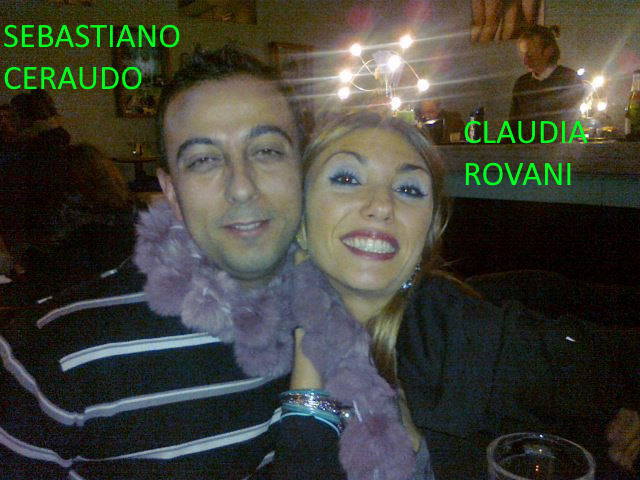
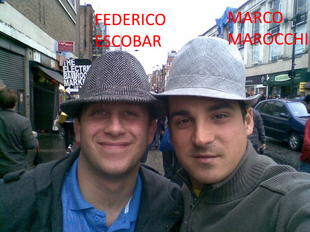
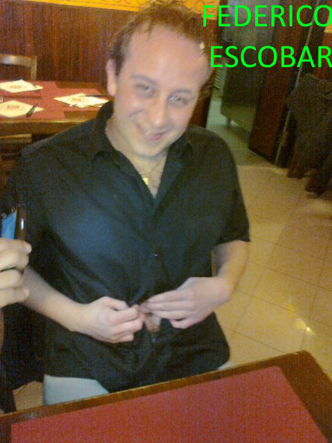
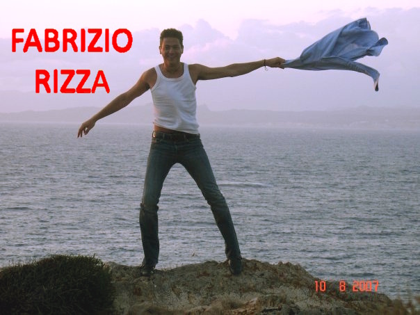

Federico Di Marco - Personal advice while applying for working at international organizations (fededim.github.io)

I’m a senior software engineer, born in Genova, Italy, with a master degree in computer science, in the second half of his forties.
I started using a computer at six years old, went through logo, basic, assembly, C/C++, java and finally to .NET and .NET core. Proficient also in databases, especially Sql Server and reporting. Let’s say I also have some experience in security but mainly in the past, now things have become much more difficult and I do not have too much time to keep myself updated, but sometimes I am still kicking in.
I am a fan of videogames, technologies, motorbikes, travelling and comedy (click my name above for my main page).
Famous quotes:
- "No one can imagine how cruel an entire country comes to be when it targets someone, making up stories, going so far as to slander, trampling on the most basic rules of civilized living." (Gaetano Afeltra, an Italian journalist and writer).
- "There will never be democracy or justice as long as anyone, using the discretionary power of doctors and the fallacious consensus theory of truth, the main instruments of repression of Western societies which define themselves as civil, is used to dismiss a lawsuit and to aid and abet criminals." (Federico Di Marco)
Introduction
During life you may be applying for vacancies at international government organizations (European community, United Nations, NATO, etc.) and I would like to point out some hints for not having potential unpredictable issues jeopardizing your career and even your life as it happened to my person.
Perhaps if you are thinking of working in such vacancies you are for sure a well above average person or even a top performer among your peers who has been successful in studies (or languages) and who wants to put your skills at the service of a greater cause obtaining at the same a high rewarding job. You are also probably a person who likes competition because you want to prove yourself how you rank among your international peers. Unluckily people who are above average in studies (and I put myself among these) are somewhat naive: they spend their time studying or working hard, often helping others without requiring anything back, but at the same without thinking that envy is omnipresent and, remember, envy creates silent enemies, sometimes even deadly. And for sure joining IGO workplaces Yes, deadly, e.g. persons who suffer from the success of others and want at all cost to curb or even destroy it because according to their brain they are better than you (maybe just for the physical appearance) and they have to prove it to others. In fact, a typical characteristic of envious people is that they do not devote time to improving themselves, but rather to trying to discredit what others have achieved in life.
Many years ago I started applying for temporary vacancies at European Commission and I was even summoned for interviews a few times (I am including a screenshot from the EPSO website - the European personnel selection office) and I inadvertently talked about these interviews to some of my "friends" and former university alumni without boasting and above all without thinking of someone could be plotting against me and my career. You never know what envy can push to do to those who feel it, it is even one of the main reasons why murders are committed (and, if I am allowed, I would say that this story is a murder of me and my family, almost due to it, which reminds me a bit the famous story of Murder on the Orient Express). In fact, as a personal consideration, I wonder why slander and defamation are considered in the legal system worldwide as minor crimes whereas they can actually destroy the life of innocent persons; the Bible itself states in the "Proverbs 18:21" an interesting verse about this: "The tongue has the power of life and death".
{kind=link}
In particular after some time I applied to one vacancy as a software engineer which required a security clearance, an unknown word to me at that time and even still "blurry" today which fundamentally "warranted" the fact that the candidate was "somewhat trustable" in giving him the access to classified information. It is obviously an undocumented procedure to most people; as far as I was able to gather reading some newspaper articles a security clearance involves a background check (criminal records at least but probably also other checks) from the national secret service about you, your parents, your close relatives and friends. Should something be found not to be "right", the clearance procedure would have ended just by "labelling" the person "not suitable" without any "consequence" on him or his family. As a sad note of my family in '80s my father had a car accident in which a very young woman (she was 17) from Venafro, Molise - historically Abruzzi and Molise were a single region, then they separated in 1963 - died and he was sentenced to misdemeanour involuntary vehicular manslaughter. This tragedy, besides me and my family, was also known to Alessandro Rabbia and his family and to two childhood friends of mine, at least at the time of this misfortune, in Abruzzi Fabio Veno from Naples and Federico Di Fonso from Pescara since my father had its car driving license revoked for two years and my mother was forced to drive the eight hours travel from Genova to Abruzzi. In addition, around one year after the Gran Canaria holiday, I received an email on my historical GMail account fededim@@gmail.com from a similar account dima.fede@gmail.com (never owned by me) containing just a picture of a kind of catheter; I asked the sender who he was and why he had sent such an email to me, but I never got back a reply. So I decided to investigate who he could be; in the past one could easily understand who owned an email account thanks to historical VoIP and video communication app called Skype, since you could easily search an account by an email address and I discovered that the GMail address dima.fede@gmail.com was owned by a certain Federico Di Maulo from Cerveteri, Rome area, who I did not know and with whom I am not related or connected. If you google the surname Di Maulo an unwelcomed article comes out linking the Di Maulo surname to Canadian mobsters connected to the Rizzuto Mafia clan and previously to the Cotroni 'Ndrangheta clan. As a consequence of all this, I was even compelled to cite the unfortunate car accident which afflicted my family (obviously without accusing them of anything!) on a lawsuit because having mentioned an article about a 'Ndrangheta clan called Ceraudo (see below) the judge, investigating also my family and seeing the aforementioned ruling, could have thought that this story was about a clash between mobsters. In fact, I remember that when I was a young in the car with my parents, my mother worried every time we were stopped by the police in a roadblock for a check due to my father's sentence. Having said that and having experienced the "irrational logic" of the courthouses, I strongly hope not to find myself absurdly accused or even slandered in the future (perhaps due to the longa manus of someone I knew or I met) as a "crazy criminal" who tried to accuse his family (I still have the doubt, or rather the almost certainty, that Mr. Bazzoni with the help of the courthouse and all the misadventures below convinced my parents that I was a non-heterosexual).
{kind=link}
Below I'll get straight to the heart of the matter giving my advice when applying for working at international organizations, if you wish to get an insight about the strange and troublesome facts (many of which, if I may, are in my humble opinion uncharged crimes) which persuaded me to create this webpage and changed my view towards friendship permanently (and the executive/judicial system), you can also read the final section.
Personal advices while applying for working at international organizations
Leaving my personal misadventure apart the advices I would like to give to those applying for international organizations are:
- Do not talk with anyone else except your family (exclude even acquired relatives, even though it is quite impossible) about applying for such positions: you never know your friends or with whom they can be related. As a matter-of-fact, the detectives told me once that often the fathers of future brides ask for background checks on the to-be husbands and sometimes they even find something unwelcome which makes the marriage to be cancelled.
- Do not trust too much any friends you knew or any new acquaintances you got introduced after starting to apply for such positions.
- Remember that performing better than others creates for sure envy in some of your acquaintances and envy creates silent enemies, sometimes even deadly. Of course, working in IGOs is certainly a potential source of envy in many people, especially for those who, feeling inferior, had always belittled him sneakily as an idiot or a possible non-heterosexual. Do remember there are persons in the world who are happy when they destroy the life or the success of others, just because they are not as good as you or, more likely, they didn't try as hard as you because they preferred to spend their time on other things (I exclude here persons with handicaps and the disciplines where the physical characteristics matter more).
- Remember that in the world there are many "criminal" minds, who come into your life just to exploit you for some reasons which you will never know or you will unluckily discover later (the simpliest reason is earning money, but another reason I can see is this one Anti-Europeanism)
- Be very cautious and ask yourself questions when an acquaintance or a friend of family introduces to your brother or sister his future to be wife or husband, they might seem nice persons at the beginning, but you never know till the end if there is a criminal plan behind it
- Be very cautious and ask yourself questions when your acquaintances introduce you women with obvious mental issues, you might sympathize with them, but you never know till the end if there is a criminal plan behind it (but maybe this is too personal).
- Be very cautious when you get involved in a situation, because any non-heterosexuals connected somehow to you will probably (and crazily) start without any hesitation slandering you as one of them, even though you are not, just for not being discovered or investigated (maybe this is personal, but I think that there is some real truth behind).
Strange facts which affected my life and changed permanently my view towards friendship
Foreword: I have never been a liar or an anomalous person in my whole life (typical characteristics of non-heterosexual people), and what follows is the pure and bitter truth of a family's killing simply because one member was better (or rather, tried harder) and more capable than the others.
It's also a sad account of what honesty and justice means in Italy and the values that are popular among the people who define themselves civilized.
I was on a holiday in US with a former friend of family Roberto Bazzoni and Stefano Meletti (he was a friend from Milan of one of female friends of Mr. Bazzoni named Stefania Serra) when I received a summon for the interview to an EU Institution and just a week before my interview I was introduced by Fabrizio Rizza, a Calabrian former university alumni, friend of me at that time, to two of his friends, Marco Marocchi and Sebastiano Ceraudo, which revealed to be easy-going and sociable at the beginning and even introduced me some women external to my circle of friends, but revealed then very "felonious" after some time. As a side note this Calabrian was introduced to me by another former university alumni Paolo Dellepiane, who was living around 100 meters from my house and in turn was introduced to me by a former my same high-school student Luigi Chirico (Chirico surname is originating from Campania), who started studying computer science at the university like us, but then left to become a policeman. Paolo Dellepiane, while attending the classical lyceum at high-school, also studied musical instruments at conservatory. Ultimately, yet importantly, at the same time, I was working at Altran Italy (now Capgemini Engineering) and I was also being relocated from the company headquarters in Milan to the ones in my home city Genova and I always had the suspicion that they could be involved with the dark figure of Mr. Marco Marocchi (high likely connected somehow to secret services) in the following unfortunate events.
At the same time, Stefania Serra, a female friend of a former close friend of family Roberto Bazzoni, introduced me to two new women, Chiara Parodi and Paola Mazzarello. Chiara Parodi was working as a business analyst in Verona, a city little less than 300 kms away from Genova, incredibly with a former customer relationship manager I worked with at Atos Origin called Massimo Gaioli, and she was coming back to Genova on weekends; her best friend was Paola Mazzarello, who at that time relocated back to Genova after having worked for some years in Alessandria. I knew very little about them (I do remember that Paola Mazzarello had a brother whom I only saw once), unluckily, they proved troublesome (I even wondered if some of the men whom she or her friends were dating could be sneakily non-heterosexuals) after some time, and Chiara Parodi later even married Mr. Ceraudo. To make a long story short, the situation degenerated after a holiday to Canary Island - Playa Des Ingles organized by Mr. Marocchi with Mr. Ceraudo, his girlfriend Susanna Giardina, her cousin Maria De Pippo from Turin area, and her boyfriend Marco Francavilla. I did nothing strange in that holiday as far as I can remember, except some unpleasant facts that I list here:
- One night I got drunk after being offered a few drinks by Mr. Marocchi and Mr. Ceraudo, I went to sleep walking by myself, but just after a minute I hit the bed I fell asleep dressed and I woke up the next day still dressed. Since I am a heavy sleeper I do not know if while I was sleeping soundly, I was shot some stupid (or maybe worse) pictures (on that holiday I was sharing the room with Mr. Ceraudo).
- The next day Mr. Marocchi rung Mr. Ceraudo mobile early in the morning asking if we wanted to come to the beach waking both of us, I remember having slept only 5 hours, but in the end, I accepted to go to the beach with the idea of sleeping there. Unluckily I was dazed from the drinks of the night before, so I just followed Ceraudo as a zombie who was very talkative and after 45 minutes of walking, I got angry because we had not still reached the place on the beach where Mr. Marocchi and the other holiday-makers were. Therefore, I called him at the mobile to discover that Sebastiano Ceraudo had gone the wrong way (and that I was not so dazed), so we had to get back and after almost one hour and a half of further walking we reached them at the end of the beach number six. As soon as we arrived Mr. Marocchi suggested to move to see the dune of Maspalomas, but I literally sent them all to the hell, laid my towel down and tried to sleep. I discovered later when they came back that he brought me on purpose close to a naturist beach (probably he or Marco Francavilla wanted to see me naked, curiosingly also Roberto Bazzoni and my brother Alessandro have a close friend called Carlo Steardo, known also by the aforementioned Stefania Serra, Giovanna Psichedda, Annalisa Marro, who was a naturist too, anyway nothing to say against him, again for the times I hanged out with him and for what I am aware), I got angry also for this, Mr. Marocchi replied that he had already gone with his parents to a naturist beach in Corsica island, France and it was a nice place, he suggested to go walking there, but I refused categorically to walk there or stay more (I could see from distance several older naked persons) so I went back to the hotel pissed off.
- I do remember that in Playa des Ingles the main venues for the nightlife were two commercial centres, one popular with heterosexuals and another popular with non-heterosexuals. I went always to the heterosexual venue, but I do remember that one night Mr. Marocchi insisted many times to go to the non-heterosexual venue which I categorically refused, suggesting to go there with his girlfriend if he liked that so much, but in the end, as far as I know, he never went there, at least on that night.
- Maria De Pippo kept asking sneakily repeatedly if I could be a non-heterosexual, making me wonder if her boyfriend maybe practised triolism or was a non-heterosexual looking for fun. Moreover, at dinner Marco Francavilla sat twice in front me to try to talk leaving instead Ceraudo to sit in front of his wife (Susanna Giardina was in the middle between him and his wife).
- While working at Altran Italy (now Capgemini Engineering) I was assigned to a project from Turin branch and I had to make an initial mission of one week there to meet the project group, though I worked afterwards always from Genova. I do remember that one day when we were having a coffee break at a vending machine, a colleague of the team talked to me not so well about another colleague at the coffee break with whom I did not interact. Marco Francavilla resembled a bit him, but during the holiday I told him where I was working and I asked directly him where he worked and he told me he was working for the investment bank Mediobanca, so I never cared too much about this fact, dismissing it as a disagreement between the two colleagues.
-
Mr. Ceraudo had a criminal record and he has origins from a Calabrian town called Petilia Policastro where this surname is notorious for being a 'Ndrangheta clan: the referenced article is published on "Il corriere della Sera", the most read newspaper in Italy and talks about a series of surnames like the Coscos, the Carvellis, the Comberiatis, the Toscanos and the Ceraudos who were all originating from Petilia Policastro and involved in criminal activities of 'Ndrangheta. Moreover, Mr. Ceraudo has a cousin in Turin called Carvelli. Out of curiosity let's do some math:
- Petilia Policastro has a population of around 8500 persons, so around 3700 families live there (8500 / 2.3 (the average number of persons in Italian families in South Italy))
- The total number of Italian families is around 27 million, Rossi (which means red) is the most widespread surname (think about Paolo Rossi the famous football player or Valentino Rossi the famous motorbike pilot) has a distribution of around 350000 families, which gives a percentage of approximately 1.3%. Let's exaggerate and assume that the percentage for both Ceraudo and Carvelli surname in Petilia Policastro is for both at 8% (1 every 12.5 surnames, around 6 times more than Rossi's 1.3 percentage).
- Using 8% as a surname percentage for Ceraudo in Petilia Policastro there would be around 3700 * 0.08 = 296 Ceraudos
- Again using 8% as a surname percentage for Carvelli in Petilia Policastro there would be around 296 * 0.08 ~= 24 Carvellis who are relative to Ceraudos
- I do not how many of the 24 Ceraudo and Carvellis related families are associated with the Calabrian clans (usually mobsters marry each other relatives to ensure a stronger connection, although very often, even in common families, "quarrels" between relatives do happen and due to these facts you can imagine how my sister-in-law and her family took a fierce stand against me and my family to defend her close friend Mr. Bazzoni), but in the worst the case (e.g. just one family exist) the probability is 1/24 ~= 4% and in reality it could be even higher.
-
Mr. Marocchi had such a vivid interest in understanding if I was a non-heterosexual with his future brother-in-law Francavilla up to the point of staging it (for all the countless times he insisted on this matter I even felt that he wanted to rape me or to be raped by someone else or even emasculating me): moreover, his wife to-be Maria De Pippo was a partner of a historical dance school called BIT - Balletto Impronta Torino (now called Compagnia BIT / Casa BIT) while Marco Francavilla worked for the Mediobanca investment bank. If you Google for their surnames it comes out some unwelcomed articles:
- An article from the local mostly read Turin newspaper La Stampa about a woman surnamed De Pippo who was involved in the massacre of Caselle (a town nearby Turin airport)
- An article from the local Apulia newspaper about a local clan named "Sinisi-Francavilla" active in the city of Foggia and its wars against another clan called Moretti. As a noteworthy fact I was told many years before by my former best friend Marco Landa that his father had relatives from Foggia. As a curios fact also the owner of a multinational Apulian company called Fincons Group in whose Swiss branch I worked many years later as a consultant was from Bari, Apulia and he was called Moretti, but I hope that they are not related.
- Turin has always been historically a city with a lot of "Calabrian activities": the same Roberto Saviano, author of Gomorrah's book, entitled Turin as the largest city in "Calabria". As matter of fact, in 2023 the cooperative managing the bar of the courthouse of Turin was closed due to 'Ndrangheta involvement.
- Marco Francavilla plays with an Italian rock band called Progetto Luna (in English "Aiming at the Moon"): coincidentally Luna (which in Italian means "moon") is also the second name of my first girlfriend Sandra which I happened to discover to be died very young in her early thirties. Moreover, they seem to have composed the soundtrack of a non-heterosexual online fiction called G&T (by Francesco D'Alessio e Matteo Rocchi). Their band also released at that time an album called strangely "Ogni tanto sento le voci" (in English "Every now and then I hear voices"). Even though I have never played an instrument in my life (leaving aside middle school) among my circle of acquaintances there were persons who played musical instruments or had a band. Beside the aforementioned Paolo Dellepiane, I can remember the twin brother Paolo Landa of my former best friend (he played in a band with a schoolmate of him whose surname was Motta) or the husband-to-be Mirko - I do not remember his surname - of another schoolmate of him called Paola Lorenzelli and his friends, about whom I barely knew anything, notwithstanding the fact I and Alessandro Sgambelluri hanged out with some friends of them several times for a period of my life (they used to meet in via Bainsizza with the same Paola Lorenzelli). Paolo Dellepiane during university used to nickname Fabrizio Rizza as Mozart like the musical composer, but I thought due to his hairstyle and I never considered or knew if he played an instrument (he personally never told me anything about). As far as I can remember, also Luigi Bozzo, a computer science alumni with whom Paolo Dellepiane started hanging out a few months before my graduation, used to play in a band (they shared the common interest of being instrumentalist). A close friend of Marco Marocchi called Claudia Rovani had in turn a close friend named Stefano Toscanini connected to a local band called Funkasso, but I barely know anything about them.
- The surname De Pippo is widespread in Campania and the surname Francavilla is very common in Apulia. Even if Marco Francavilla is not originating from Apulia, there might be the remote possibility that one of the aforementioned persons had colluded with some local criminals who have the same surname.
- Oddly the prosecutor who "managed" my lawsuit Emilio Gatti became later a deputy prosecutor in the courthouse of Turin and as far as I was able to understand he had also worked in the past for the specialized Tax Court of Justice.
- Mr. Marocchi tried extensively to make me date his female friend called Claudia Rovani, a surname originating from Argentina and Brazil. Mr. Rizza once warned me against her (he literally said "there's something about her that I just don't like I really don't like"), I can remember she was very very thin, she studied as a psychologist in Florence, Tuscany and she was working in politics in a local district of my homecity. At the time I was introduced to her, she dated officially Fabio Risso, who managed a bar in my home city called "A Due Passi Dal Mare" with an Albanese business partner (I do not remember his name, he was nicknamed Nemo like the famous Pixar fish), and she was a close friend of Stefano Toscanini. Initially I suspected of him because he was working with Claudia Rovani in politics as a municipal councilor, seeing her almost every day and moreover he seemed to me a non-heterosexual, but then one of my acquaintances made me change my mind; as a curios fact he was a hobbyist fisherman like my best friend Marco Landa and he also went fishing near the Brugneto lake where my best friend has his second house, near a small village called Caffarena near Propata. I can't say anything against her, at least for what I know and the times I met her, I mean to defend her close friend Marocchi she could even have made up or staged any slander about me or my family; moreover, she had in the past an affair with Mr. Marocchi and an episode happened several months later made me wonder if she could have had an affair also with Sebastiano Ceraudo (no one I considered a friend either confirmed or denied this). Strangely Mr. Marocchi suggested a few times sneakily to go on holiday in Argentina during our Italian summer vacation, to which I replied funnily without thinking badly at that time that it was winter there, so it was cold and I didn't feel like going skiing. As a matter of fact, my family has some relatives in Argentina, but I have only seen a few of them once in my whole life, though we have been recently keeping in contact on the phone every now and then.
Mr. Marocchi's best friend is called Federico Escobar, quite a "worrying" surname, he had Chilean origins and relatives from Campania, he lived in Rapallo, a city on the sea where a lot of people from Milan and surroundings have the second house and also the same city where my brother and his wife were living at the time of the facts (I was never told by anyone if they any of them knew him, but probably not), even though I can't say anything against him, at least for what I know and the few times I met him (same note as Rovani's apply). In fact, since Federico Escobar was looking for a job as a cook on board a ship, I had even forwarded his curriculum vitae, at his explicit request, to a female friend of Alessandro Rabbia's called Alice Agosti (she dated for a long time Andrea Ghiazza, a friend and a colleague of him at his same shipping company Ignazio Messina and a former computer science alumni known by the aforesaid Paolo Elennio and Danilo Quaranta) who worked at Costa Cruises, even though, as far as I know, Federico Escobar was not called for any interview (hoping that this was not a clever ploy of his best friend Marco Marocchi to stage he was a friend of mine instead of him, by the way as far as I can rembember Federico Escobar did not finish school as Giulio Manassero). He had an affair with Claudia Bonifazio, a woman related to Sebastiano Ceraudo's first wife, whom I also dated one evening (if I remember correctly she was from Finale Ligure and she was studying at the university in Genova). He had just left London where he was working as a cook when he was introduced to me and used to dance salsa and bachata like me, though I met him only twice in the dancefloors of my city. Once I had been to a bar managed by his "parents" which is in Genova in the neighbourhood of Nervi (along "Via Oberdan" street if I remember correctly). As a matter of fact, Mr. Fabrizio Rizza used to live in his girlfriend house in Sampierdarena, a neighbourhood of Genoa with a large percentage of South Americans, who lived also in the same building of their apartment, but I do not know if they are connected to Federico Escobar somehow. As another possible connection the evangelical faith is widespread in South America and Ceraudo's first wife was an active practitioner of this religion.
The surname Escobar is notoriously connected to drug smuggling, I myself almost never smoked (I would say around 10 cigarettes in my whole life) and I have never made a joint or sniffed any drugs. Among my circle of friends the ones mostly connected to drugs are Luigi Chirico and another friend of mine Giulio Manassero (he did not finish school and he has worked for several years as a "carabiniere", an Italian military police which deals with civil crimes, now he works as a perfumer in a small family shop) who used to go clubbing together (I introduced Giulio to Luigi precisely for this reason) in discos where having fun with drugs was the order of the day like the ones in Ibiza, moreover they aren't the only law enforcement personnel using drugs, around 2010 in Genova there has been a great scandal about policemen consuming/smuggling drugs and every now and then a news like this comes out on the newspaper. Fascinatingly Giulio told me once that in many LBGT clubs there was a great consumption of drugs and no-one ever complained or tried to curb this and he, as a former "carabiniere", always wondered why (oh who knows maybe he was a small time drug dealer in these clubs before becoming a "carabiniere" :-). For sure my parents never consumed any drugs, I do not know about my brother Alessandro, but I strongly hope he did not. Last but importantly, Giulio used to change his mobile number very often, but I was never told the reason and once he also suggested that most of non-heterosexual persons could be bisexuals as Sigmund Freud speculated in his theories.
Luigi Chirico once after these facts warned me that Giulio Manassero was making fun of me as a "bender", but I never believed him for nothing due to the fact that I knew Giulio earlier than him (he was an elementary school co-student and friend of mine) and when we were teenagers, Giulio always used to go clubbing to a local club called Cezanne where he was surrounded by women (at that time he did not care at all about drugs) and he always invited me to join the club and a few times I went there he granted me free entrance and even introduced me some girls. I do remember however one strange fact which seems to support Luigi Chirico's concern. While I was studying at university I, Paolo Dellepiane and Luigi Chirico had an odd job during the weekend as a pizza delivery driver for a local pizza business on my home city Genova called Pizzapoint in order to earn some pocket money (it was the same Paolo Dellepiane who introduced me to this job); after we had finished working we usually sat on the wall in front of the pizzeria and we discussed about where to go that night; I do remember that Giulio Manassero, who came to pay a visit to us very few times often carrying some weed, once brought a drug called popper offering it to everyone who was present there and later I discovered that this drug was also widespread among non-heterosexuals since it relaxed muscles like anus and it was usually used to facilitate anal intercourse. On that occasion I did not pay any attention to this event (I mean Giulio almost always carried with himself some drugs) and later I wondered if it had been done on purpose. On top of that, at Pizzapoint, besides Luigi Chirico, also other former co-students of my same high school lyceum G.D. Cassini used to work, for example I can remember Fabrizio Librio who later started working as a "carabiniere" in Turin; last, but not the least Fabrizio Rizza was a customer there (also my family was a historical customer, registered under my brother Alessandro), buying the take-away pizza every now and then. Also, another worrying fact came to mind about Giulio Manassero, which occurred one day many years ago, when we were early teenagers, together with my cousin Massimo Cami. Giulio was a funny person who used to say a lot of bullshits to have fun, and on that day, he was making fun of me using a nonsense nursery rhyme he created, which included a brain-damaged person. On that evening while we were all going to a pizzeria with my parents he repeated that nursery rhyme in the same moment that a disabled person was coming outside in a wheelchair from a house near where I was living with my parents and Giulio Manassero started rolling from laughing, notwithstanding that my mother told him to stop; chance or rather the worst misfortune would have it that that person was the brother of Paolo Dellepiane who, at that time, I had not still met. I never told this unfortunate event to him or to Luigi Chirico, because Giulio was a teenager and I had also forgotten about it, but I fear that Giulio who used to say bullshits to have fun, while clubbing with Luigi Chirico, could have said this episode to him without knowing he could be speaking of the brother of his best friend Paolo Dellepiane. Also, Massimo Cami knew about this, but he hung out very few times with Luigi Chirico, so hopefully he should not have told. For all these reasons I fear that the best friend of Luigi Chirico, Paolo Dellepiane the one who introduced me Fabrizio Rizza during my thesis at university could be involved in the story (he introduced me Fabrizio Rizza an incognito non-heterosexual to make me pass for one of them ?), though Giulio had some issues with the first South American wife and later he married again with a Romanian woman called Maria, fact after which he curbed greatly his "partying in such clubs", even though I do not know almost anything about her or her family. Moreover, Paolo Dellepiane has worked in the past for the Italian branch of Zucchetti, a big multinational Italian company where I have recently worked with in Mendrisio, Switzerland, whose rainbow employees working there committed the greatest human rights violations ever done in a workplace (as if they were "coining money" or, alternatively, crazy and I am still wondering the reason except the obvious one). This multinational company has its headquarters in Lodi, Italy, the only connection I can remember with this city is a girl named Noemi which I met when I was a teenager while on a vacation with my parents at Elba Island, but I have never heard of her since then.
I used to attend salsa and bachata classes at Victor Latino club in Genova (now it is called Caribe, whose well-known businessman is Rocco Mariani from Campania), my main teachers were Amelia De Martis and her historical South American dancer Mauricio Hernandez (they have danced extensively together around the world for many years and they even became Italian national champions in a category which I do not remember, then he started working as a latin DJ called El Bimbo and now he plays at Aegua club in a nearby town named Varazze), I still have the doubt whether anyone of my salsa club knew Mrs. Maria De Pippo or any of her acquaintances (some very unpleasant and felonoius events happened recently at Aegua club made me wonder also whether Mauricio Hernandez could be a non-heterosexual). Amelia De Martis had an affair with a Calabrian Alessandro Sgambelluri, a close friend of my former best friend Marco Landa and also a friend of mine for a period of my life. Attending salsa and bachata classes there were also policemen (I can remember one called Silvio) and another person called Silvano (I do not remember his surname now) who was a close friend of Alessandro Sgambelluri (beside a common companionship and attending salsa clubs they worked both as train conductors); with their companionship I had hanged out for a few years (I remember three women Silvia Pasetti, another Silvia and Stefania from Recco a city nearby Genova whose surname I do not remember), but then I discovered Silvano had it in for me without any apparent reason and after that I didn't see him or his company anymore. Silvano was funny and well-endowed (at least for what he and some women praised, and his ego was greatly boosted by the fact that many women pursued him) and he leveraged this making often fun of others, sometimes even ruthlessly labelling them often as faggots for his success with women. I discovered later that he also backstabbed me making fun of me, notwithstanding I initially attended much more the salsa classes than the salsa dancing events; moreover, in salsa clubs there has always been a fair share of non-heterosexual people (dancing is one of their strategic strongholds) so he got also their support against me. It is noteworthy that one year I went on a holiday with Silvano to Lloret De Mar, Spain and the fate had it that also Fabio Veno from Naples was there on holiday in the same period (we hanged out once one night to say hello to each other because it was years we had not seen each other). Ultimately yet importantly, also some employees of Costa Cruises used to come dancing salsa at the aforesaid Caribe Club, I remember a woman called Serena Dellacasagrande, she worked as a functional analyst in my same project Mistral and I interacted also with her during the work week (I was told that some time after I left Atos Origin she also resigned from Costa Cruises to relocate to Trento in Trentino-Alto Adige).
- The holiday to Playa Des Ingles, Gran Canaria was suggested and organized two months before by Mr. Marocchi just after having passed a weekend in Turin in November, where I, Mr. Ceraudo and Federico Escobar went to pay a visit to Mr. Marocchi who, though from Genova, was working there and had an employer-paid house where I slept with him and Mr. Escobar (Mr. Ceraudo on that night went sleeping to the house of his cousin Mrs. Rosina Carvelli). Of that weekend, the only one I have been in Turin in my life, I can't say anything except that we went to a music club in the Murazzi area along the Po River where nothing unusual happened and later we went to have breakfast in a very big bar (I do not remember their names). The only fact worth attention was that while talking to Mr. Escobar he abruptly suggested that I should forget Mrs. Claudia Rovani, which I did also for other reasons in the following weeks. I can't say if Mrs. Maria De Pippo or Mr. Marco Francavilla or any of their acquaintances were with us at the music club or at the bar we had breakfast because I did not know them and moreover on that weekend they were unavailable (I had personally asked Mr. Marocchi to introduce them to me on that occasion because he was already thinking to the holiday to Gran Canaria and I wanted to know with whom I could be going on holiday, unluckily Mr. Marocchi only introduced them to me the same day we were leaving from the airport and I met them directly at the gate because we flew from Pisa (in Tuscany) airport(PSA) and they arrived very late from Turin stating they had been stuck in the traffic, also the choice of Mr. Marocchi of departing from Pisa airport (PSA) is somewhat debatable, for sure Milan Malpensa would have been a better choice for them and almost the same for us). After that holiday I decided to break off the "friendship" with both Mr. Sebastiano Ceraudo and Mr. Marco Marocchi and the latter reacted in a resentful way (instead of apologizing) coming down my house leveraging that I should not break up a "friendship" in this abrupt way and trying to brainwash me for an hour as the one who was the non-heterosexual and not the "cousin" Marco Francavilla related to his girlfriend Susanna Giardina (I included also a cd with the recording of this "crazy non-heterosexual conversion brainwash speech" - click here for Italian transcript - attached to the lawsuit, Sample Clip 1, Sample Clip 2 and Sample Clip 3).
It is astonishing that this criminal speech for the brain of Mr. Marocchi, his friends, many persons and the "scientists of the psyche" and even some judges is an irrefutable proof that a human is a non-heterosexual, whose definition, I would like to remind, is a person who sexually or romantically attracted to people of one's own sex. Using the same principle, then, one could simply stage that someone is paedophile just by befriending him and making him a similar speech after some time, that he could be a paedophile who doesn't accept himself, who doesn't accept his mistake and who should seek advice from someone more experienced; after this "magical sermon", boom, he would become "legally" a paedophile :-D. As I wrote in my other page about LBGT community there is no test in the world which can establish "mathematically" the sexual orientation of a person, from the logical viewpoint there is no formal falsifiability criteria so anyone can be "labelled" as non-heterosexual without being able to prove the contrary and this, like everything else without such criteria, is often used to perform slander by criminals and unprincipled persons.
Anyway this has been the first time in my life that I let someone whom I naively regarded as a friend took the liberty of saying such an insult to my person (later even the ruling Court of Cassation, Section V, judgment of 17 May 2021, no. 19359 by the Italian Supreme Court confirmed this crime, who knows maybe an unprincipled judge could even use it against me by claiming that I was the one who started it whereas in fact it was my acquaintances or those I considered friends together with their non-heterosexuals friends who started it and then a multitude of envious people happily joined) and after such event I never gave anymore a person behaving in this felonious way the right to justify himself breaking off "the friendship" immediately (unluckily at a later time it happened again with my former friend of family Mr. Roberto Bazzoni as described in my other page on LBGT community, resulting hence in the breakdown of all relationships with him, even though many years later my brother let him come to the funeral of our mother against my will, even though I strongly suspect the longa manus of my sister-in-law or the courthouse). - Three weeks before the holiday to Playa Des Ingles we spent the New Year's Eve dining at Ceraudo's house in Genova, where also a female friend of Sebastiano Ceraudo called Valentina Pittaluga joined; I was introduced to her a week before while walking around Christmas stands with near a central train station (Genova Brignole) with Sebastiano Ceraudo, I do not know if she was actually interested in me, but while talking out of blue she suggested loudly that we could go to Ceraudo's room to have fun together, to which I replied just by smiling (frankly I was not interested in her, but I wonder if she did that on purpose because I think she should not have said that in front of others in a loud way, anyway). Peculiarly she was a little bit similar to my first girlfriend, of whom, however, I had never spoken with anyone (besides my family and Roberto Bazzoni, only Marco Landa, Paolo Landa, and Alessandro Rabbia knew her). After such event Chiara Parodi "enjoyed" in making fun of my person using a tipsy picture of me being hugged by Sebastiano Ceraudo posted by the same Ceraudo on his Facebook wall and by commenting with the funny word outing (she even tagged me, at that time I did not care at all, by the way the holiday to Gran Canaria had already been booked by Marco Marocchi and been paid by me) (for comparison I link two other non-tipsy pictures of me of that evening before becoming merry, Eating a slice of salami and Sucking fingers from the tastiness). As a matter of fact, after cutting off all of them after the holiday to Gran Canaria, since the situation was degenerating and even no one in my historical circle of friends wanted to defend me or even tell me who had it for me, I had to hire some private detectives to act as my "eyes" and "ears". One night I made them follow me from distance in a public plaza well known for its nightlife and full of people while passing near the aforementioned persons who were drinking and smoking outside and without even looking at them or saying a word the detectives noticed that Sebastiano Ceraudo enjoyed in pulling the arm of Marco Marocchi and making fun of me, also by pointing at me with his finger. Personally, I would actually have expected such behaviour from Marco Marocchi, but since that moment I understood that they were accomplices. From my point of view, everything was planned in advance by them: on top of that, they cleverly made me pictures which could be misunderstood to convey the idea that I could be a non-heterosexual before that holiday, as they wanted. Also, from the holiday to Gran Canaria there was almost no way out: at some point I had decided to get back by plane and leave all them, but the only flights back to Pisa airport (PSA) were, if I remember correctly, only on Wednesdays and Saturdays (we arrived on Wednesday) and going back to Milan Malpensa and take 4-hour trip by train to Pisa was not the most appealing idea (my car was parked at Pisa airport). Finally but importantly, when I hung out with them during the holiday they were also sly in taking normal pictures where I was smiling for staging that they had behaved well, whereas I was trying to make the best of a bad situation. As a highly unlikely possibility I even suspected that Marco Francavilla could have been replaced with a doppelganger of him just after having landed or during the trip to the hotel (I just said hello to him at the gate and on the plane I was sitting far from him, in addition when driving by car to Playa Des Ingles he drove very very slow at around 80 km/h on the highways and then in city of Playa Des Ingles he was speeding quite a lot). Anyway, I reported everything to the authorities, but no crime was seen astonishingly by the judge.
-
On the summer just before the holiday to Gran Canaria, I had been to San Teodoro, Sardinia (by the way in Sardinia IMHO you can find the best sea and beaches of Italy) for two weeks in a seaside house provided at good price by Marco Marocchi construction company Coopsette of the CCPL group (cooperatives in Italy are historically connected to the left wing political parties, also a former high school schoolmate called Matteo Brandani worked for the same company, Mr. Marocchi also told me he had worked earlier abroad in Kazakhstan for Eni), where he also invited some of his female friends who joined for a shorter period: the aforementioned Claudia Rovani who came just for three days since she suddenly had to go back to Genova, the aforesaid Susanna Giardina who later became his girlfriend, Annacarla Scialpi and a friend of her called Monica who had come back to live to Italy from Germany. Moreover we also met four women from Brianza, Lombardia called Giulia Folcio, Cristina Porro, Laura Peccerillo and another woman whose name I can't remember (surprisingly we found them just behind our towels on the beach when we came back after swimming). Giulia Folcio and Cristina Porro also came to Genova around one month after such holiday to visit us (they had an accommodation near Recco), one night we went together eating to a restaurant in Santa Margherita Ligure and then another night to a beach club in Genova called Sys Sporting where the DJ Danilo Quaranta used to play (unusually he was a former alumni of my university who used to play pool in the same club I used to go with Paolo Dellepiane and Luigi Chirico and who became a DJ near the end of the studies becoming eventually very popular). During that weekend nothing particular happened except that Luciano Elennio, the brother of Paolo Elennio, a former friend of mine (nicknamed "Pablo" by Marco Marocchi) and another alumni of computer science university, started shooting several pictures at our group in an annoying way, probably also to Cristina Porro and Giulia Folcio, even though they never complained with me and also none of the people present ever said anything to me about such misbehaviour (I haven't ever seen Luciano Elennio since this fact and many years later I came to know that he started working near Novi Ligure, Piedmont). Moreover Paolo Elennio had worked in the past in Ericsson, Genoa (it was called earlier Marconi Communications) and is also a friend of the DJ Danilo Quaranta (they grew up in Genova in the same neighbourhood Sestri Ponente); about DJ Danilo Quaranta I can just say that once (it was 30th July 2012) he published an odd post (picture snapshot here) on his Facebook wall where he suggested to someone (maybe he or one of his friends I do not know) which more or less stated "being a hero is not for me, because it can end badly and in the best case scenario they will dedicate a street to you with drug trafficking, whores and trans, it's not worth it". For my person it was one of the oddest - and I would say threatening - post I read on Facebook, notwithstanding there were also some of his Facebook friends liking it and commenting it. Last, but not the least, Paolo Elennio had also male and female friends in Piedmont, who I saw only twice, once at a pleasant dinner in a restaurant and another, less exciting, at a club, but I barely remember them (I remember of a male friend, more or less of our same age, who unusually boasted of hanging out very few times because he preferred saving money for travelling around the world) and I do not know - and never asked - how they were connected. What I fear is that Paolo Elennio, like others, has been subjugated somehow by Marco Marocchi who is very good at this, and he was turned against me, in support of this I attach the recording of a telephone call (sorry it is in Italian) where Paolo Elennio was performing an out of context effeminate laugh while talking with me, very strange, but again at least for what I know and the times I met him I can only say that he was a common men who used to go to clubs in order to meet women, even though a few times he happened to be too tipsy and insisting too much got funny, yet very harsh, replies from women ("I'm pregnant leave me alone", "I'll report you if you continue" are one of these "nice" answers). Or, who knows, maybe I will discover that he was an incognito non heterosexual introduced to me by Paolo Dellepiane since in the linked telephone call he kept complaining about Ernesto Besio - a friend of Stefania Serra and Roberto Bazzoni, older than us and external to my usual circle of friends, who happended to come to the New Year Eve's dinner hoping he was not sent on purpose by them - who did not want to go skiing with him, moreover Paolo Elennio used to attend Argentine tango lessons :-). As one curios fact he obtained the bachelor degree in computer science, worked for around 15 years in IT sector, after which he decided to start working as an accountant as per his high-school studies (also Paolo Landa studied accountancy in his high-school) and he had a side job as a steward at the stadium (he checked tickets at the entrance).
During the middle of the holiday in San Teodoro I remember that one day Marco Marocchi borrowed my old car, a Lancia Y 1.2 16V to go to the Olbia airport (OLB) to pick up his work colleague Susanna Giardina, who was coming by plane from Turin. I naively let Marco Marocchi use my car because on that day I was too sleepy and I preferred to rest in bed. Luckily I did not receive any fine or get accused for any crime linked with that car which I had to scrap many years later in 2017 due to a broken engine. This car was gifted to me in 2006 by Franco Reggio, a historical friend of my father born in Strevi, Piedmont since he was getting too old and he preferred not to drive anymore. He was another executive from Italsider the biggest Italian steel company, who has worked extensively with my father and who also attended ESCS meetings in Brussels. As a curios fact in September 2023 my home city's local newspaper Secolo XIX published a news about the death of Giovanni Gambardella from Apulia. The news stated to be a top manager who reorganized the steel company in the late eighties after it was named back to Ilva. Ilva was the original name of the company meaning Elba Island in Latin, an island in Tuscany mostly known for its sea tourism, but it also had significant iron ore deposits used to fuel the blast furnaces of the steel company. What is odd is that Giovanni Gambardella looks quite similar to Franco Reggio, here it is a double picture of them for comparison, however either Franco Reggio or my father never spoke of him at our weekly lunch on Sundays. By the way I only spoke of Franco Reggio to Fabrizio Rizza who was curious since he used to lunch with us on Sundays and he also used to live in a simple hotel after he retired. As a marginal fact Franco Reggio underwent a heart surgery in Turin area many years after he retired, but I do not know why he decided to go there, even though he was born and raised in the region Piedmont; his trusted family doctor had my same surname Di Marco, but we are not related and he had its study near the aforementioned Italsider steel company in Cornigliano district where he had worked almost all his life. He died in Turin area in 2013 where he went living his last years with some relatives of him, who had already been living there for decades (I only met them at his funeral).
As a matter-of-fact I discovered many years later that the town near Varese called Induno Olona, where I relocated later for working in Switzerland as a cross border worker, has its main street called "Via Porro", by googling Porro on Wikipedia I understood that "Porro" is the surname of a historical powerful noble family from Lombardia, entitled lord ("signori" in Italian) of Induno Olona and astonishingly even of my home city Genova. I do not know if Cristina Porro is related to this noble family or not and I do not have nothing to say against her or her friends that I met in San Teodoro (again at least for what I know and the times I met them), but I can't say the same against the town since some period after I relocated here, I was anonymously slandered.- My former close friend of family Roberto Bazzoni just a month after my first interview in international organizations tried to kiss me out of blue in the middle of party at Giovanna Pischedda's house - a female friend of him - and made us take an artistic snapshot of the scene by a female photographer friend of him Stefania Serra, probably accomplice of him minimising it was a joke. Mr. Bazzoni works as an expropriator consultant for the courthouse (he works for the company IVG Genova dealing judicial auctions and he has also a second job as apartment block administrator (before that he has worked for many years in the supermarket industry at Carrefour near Aosta) and moreover he even dated female judges (if I remember correctly she was working at the courthouse of Chiavari, a nearby city), ironically I can't think of a better "alibi" for a suspected non-heterosexual. Personally, I do not care at all whom he dates or what he does, absurdly he might even be a henchman of a mobster, a scammer or paedophile but that's his own business (or maybe of the courthouse), I just didn't want me or anyone in my family to be passed off as a non-heterosexual or be involved in a scam or another crime. Also other alumni of computer science whom I knew almost by sight started working for the courthouse as consultants too, I remember Mirko Davolio, a biker and close friend of Fabrizio Rizza, Marco Scarito and Mattia Epifani who, as far as I was told, they did not get along well with Fabrizio Rizza; Paolo Dellepiane told me once that Mattia Epifani had parents working in politics, but apart from that I barely know anything else about them. In addition, the same judge who had dated Mr. Bazzoni dated also later Mirko Boero, a friend and a former classmate of Paolo Landa, the twin brother of my former best friend Marco Landa, oddly both Marco Landa and Mirko Boero have dated South African women, not so common in Genova. Last, but not the least, Mr. Roberto Bazzoni dated for a period of time a woman called Antonella from Recco and another woman called Monica Ghirlanda, an acquaintance of Stefania Serra who I was told she had been working with doctors, but I barely know anything about them.
- In my house there was a framed picture standing on the chest at the entrance with me, my former best friend Marco Landa and Roberto Bazzoni sitting at the table which was taken not long before these events, at an aperitif at Bar Blanco in the Carignano district by the aforesaid Stefania Serra who also invited us there (if I remember correctly the bar was reopening after a renovation); some time after my complaints (I do not remember when) this picture was removed (with other ones, I remember one of my family with the aforementioned Claudio Maccaroni and his wife) and I was unable to find it anywhere inside the house, high likely it was removed by my parents, but I was never given an answer and I am still wondering why (I strongly hope my former best friend he was not a non-heterosexual like Mr. Bazzoni without my knowledge) and if Stefania Serra did this again on purpose.
- Mr. Marocchi had friends working both in the police (I do remember one named Alex working also as a public relation in a club called La Kascia in Arenzano, where also the DJ Danilo Quaranta used to play often and my former university classmate Paolo Elennio used to go) and in "Carabinieri" (I do remember a woman called Luana whose father worked as a "carabiniere")
- Just two months after the holiday to Playa Des Ingles, after I started cutting off some friendships, I dated for two evenings Lara Rubattino (she wrote me on Facebook), a female colleague who had worked with me as a consultant at Siemens automation in Genova, after which she decided abruptly not to see each other anymore. She was from a city near Genova and that she had also lived in Florence before starting working at Siemens automation; she even professed to be a kind of anarchist, even though for the two days I saw her, she has did not do anything strange (as a matter-of-fact many years later one of the judges which managed my first lawsuit, Ferdinando Baldini, who also made the greatest human violation using unprincipled felonious doctors against a respectable human being, condemned an anarchist with my same surname named Carlo Di Marco with whom I am not related at all, though my political views are aligned towards the right wing). I do remember that while working at Siemens automation she always praised and probably had an eye for another colleague Giovanni Immordino, originating from Campania, an electrical engineer who was working as a software engineer like me, with whom I never had any issues, at least for what I know. Giovanni Immordino even introduced me once a pretty female friend of him called Ornella Sole whom I happened to meet every now and then while clubbing around my home city; once in a club my former best friend Marco Landa suggested in asking her if she had had an affair with Giovanni Immordino, a question to which she replied in a funny way if I was joking since he was a non-heterosexual. I was speechless, but I immediately remembered of Lara Rubattino who always praised in the office Giovanni Immordino too excessively as if she wanted someone of the office to date him (I strongly hope she was not thinking to my person); I still have the doubt today, even though I never dare to ask him because I had always been looking for women and as I said I never had any issues with him. Lara Rubattino had also a sister whose name I do not remember who worked too in Siemens Automation in the same open space with us near me and who was also a friend of Sonia Marsano, another computer science alumni and my desk colleague to whom I handed over StarterService, a remote program execution service I had designed while working at Siemens Automation a few weeks before I left. Interestingly she relocated for a period of her life in Acqui Terme, a city not so well connected to Genova, famous for its sweet red sparkling wine Brachetto d'Acqui and also very close to Strevi, the hometown of Franco Reggio, a close friend and work colleague of my father. Finally but importantly, Sonia Marsano was a close friend of Fabio Roccatagliata, another computer science alumni with whom Roberto Bazzoni did the compulsory military service in the navy (hoping they were not secretly lovers and they haven't allied themselves in this story against me and my family :-); furthermore, Giovanni Immordino started some years later dancing salsa and every now and then he came also dancing to the club where I had trained Caribe, where however I was not going anymore.
- Two years before these facts I went on holiday with Roberto Bazzoni to El Arenal, Palma de Mallorca, Balearic Islands where we met four Venetian women staying at our same hotel (and one night at a pub I noticed also a blonde woman who reminded me a lot of a friend of Alessandro Sgambelluri who I had seen a few times) and then to Ibiza, Spain where Marco Pallavicino joined us and later also Giulio Manassero who stayed instead by himself in another hotel. There nothing special happened except that we met two other Venetian women with one of whom Marco Pallavicino had quite a passionate summer fling even in the hotel pool just in front of other guests (including children :-) and that Roberto Bazzoni one night insisted on going clubbing to "La Troya" event at Space club which I discovered unfortunately to be the greatest non-heterosexual event in Ibiza (I blame myself for being an idiot, but please keep in mind that it was 2008, smartphones were only at the beginning and there was even no free roaming in Europe, luckily thanks to European wide roaming and the smartphones which are now widespread these nasty tricks are much more difficult to be done). Usually when Giulio is stoned (I believe like everyone else) says a load of amusing bull**t and in that holiday, I do remember that Roberto Bazzoni even made a recording of one of his speeches with his Nokia phone (a glorious mobile brand from the past) which we later listened to again having fun altogether.
- Around one month after I sent a CV for applying to a temporary position in a European Union agency, I was contacted by the aforementioned computer science alumni Fabio Roccatagliata for another vacancy in Monaco Montecarlo in France, where I went by car for the interview, though we both discovered that the position was not a fit for both me and the employer. I regard this a noteworthy fact because during university I barely had any interaction with Fabio Roccatagliata - as also Fabrizio Rizza pointed it out to me afterwards - so I was a little surprised about him suggesting me for a vacancy in Monaco, Montecarlo; about him I can only say that during university he was a keen Internet surfer (incredibly in the late 90s at Genova's computer science university only thesis students were allowed to access freely internet, though "unapproved" workarounds existed) and as far as I can remember from the business lunch break we had in Monaco he was a person who ate very slowly compared to me, even though I am a very voracious person. As a curios fact nine months after this interview (and after 4 months my first interview in Brussels), Fabio Agostini a former manager of mine at Atos Origin relocated from Milan to Monaco, Montecarlo. Anyway, after my interview in Monaco I decided to spend the evening with Fabio Roccatagliata, who introduced me to some people, including two women. The first was an eye-catching blonde from Turin who was working there. For some reason still unknown to me, while talking to Fabio Roccatagliata made a very bad joke saying "Even I can't fuck someone like him". I did not know who she was referring to; I even suspected it could be me, but it was the first time in my life I had been in Monaco, Montecarlo, the first time I saw her, and also the first time I hung out with Fabio Roccatagliata, so I dismissed this episode as she was referring to someone else (I happened to meet a woman resembling her many years later at Soleluna club in Albisola and I even danced a salsa with her, but, being high unlikely since she was too far from both the cities of Turin and Monaco Montecarlo, I did not dare to ask, hoping she was not sent Intentionally for unprincipled purposes to the salsa club where I was going). Later, I spoke with an Armenian woman who was nice and did not say anything strange, at least in front of me. That night, while driving back to my hometown, I thought of the people connected with the city of Turin that I knew. Except for the aforementioned Marco Pallavicino, the only one I came up with was Tiziana Bruno, a female former colleague from Atos Origin with whom I had worked for around a year on a project in Milan the previous year. She was very easy-going, and there was a bit of a feeling. I remember she once insisted too much, with our manager Massimo Gaioli, in coming on a mission to Milan when I was also there, and to be assigned a room in the same hotel I was staying. We also dined together, enjoying the evening very much, though nothing happened later, mainly because she was engaged and she was going to marry in the following years. Many years later, I discovered that the aforementioned Sebastiano Ceraudo had relatives with the same surname, Bruno, but I do not know if they were related somehow (a lot of people in Turin have origins from Calabria), and I never dared to ask or to investigate. I am also unsure whether the female blonde friend of Fabio Roccatagliata could be a friend of the two persons from Turin I met many years later Marco Francavilla, Maria De Pippo, or one of their acquaintances. As a matter of fact, at the end of that year, I was even summoned for an interview for that vacancy in Brussels (I started meanwhile working for Altran Italy (now Capgemini Engineering)). Nothing unusual happened in Brussels, the interview was indeed one of my best ones, though I was not chosen, maybe they had in mind to allocate me in another agency, because I had applied for different vacancies, but one of the next interviews was not successful at all. Anyway, the only thing worth remembering was the return flight from Brussels to Malpensa, which was heavily delayed (around 4 hours on 2 hours flight), so I and the other passengers were forced to wait in the airport, talking with each other and hoping that the flight would not get cancelled. I remembered having talked for a while to a person from Monaco, Montecarlo about fishing (I was curious because I never went fishing in my life); however, he became too much talkative and so after half an hour I decided abruptly to cut him off to go to speak to a woman who was waiting also for the flight and the person from Monaco was a little resentful about this. On that occasion, I even wondered if he could know somehow Fabio Roccatagliata or his friend, but at that time it was not worth of spending time to discover.
- Mr. Bazzoni and Mr. Rizza had a common friend originating from Campania, called Antimo Verde with whom Fabrizio Rizza told me he had used to go to gym and to attend a funky dance class. Unluckily Verde is also a notorious surname from a Camorra clan historically active in Sant'Antimo, a city near Naples, but I barely know anything of him.
- Mr. Bazzoni has always had non-heterosexual friends, I do remember one named Massimo which I have only seen once and he unexpectedly lent his car for the marriage of my brother and sister-in-law, an event which I have always wondered why because my family could have afforded it and even more astonishingly "they" decided to have their wedding dinner in a well-known club called Sol Levante in Lavagna, a nearby city (as a matter-of-fact besides Mr. Marocchi also my former best friend Marco Landa had connections with clubs, he had a relative who worked in the clubs of my home city as a bouncer). Moreover, Mr. Bazzoni has always been a supporter of non-heterosexuals, though he cunningly used always other persons, in Italy we have a way of saying about this "Sono tutti finocchi con il c**o degli altri" which literally could be translated "They're all faggots using other people's as**s". Finally, yet importantly Mr. Bazzoni had a passion for gambling and casinos like his father and a little bit also Paolo Elennio; as a matter-of-fact the father of Roberto Bazzoni during his retirement supported actively the Italian Caritas, a religious organization which sustained in turn also Don Orione, the retirement house where my father and my mother spent the last years of their life.
- The wife of my brother (so my sister-in-law) Roberta Grillo is a close friend of Mr. Bazzoni (as well as her sister Marina who before becoming a masseuse happened to be working as a clerk at Genova's airport like also Luigi Chirico did for a while) and he was the one who actually introduced her to him. Since as far as I can understand from the events that Mr. Bazzoni is most likely a non-heterosexual, being a close friend also of my brother, I even considered that all this story could be a clever scam if my brother is or has been a non-heterosexual, but I was never said anything either from him or from my family or from my other close relatives or friends. Or, who knows, perhaps a scam exploiting "lavender" couples or common people since I have been slandered without any reason in many places I have been hanging alone - so without any witness - probably to force a reaction from me, a reaction which was almost always based on mockery, but in some cases due to their criminal behaviour it was taken to extreme sarcasm. What I fear the most is that due to the high presence of Calabrian persons among my circle of friends, criminals might have taken it out on my family by having them extorted or raped (for Italian law the rape crime verifies also simply when giving an unwanted kiss, maybe to stage someone of them was non-heterosexual, in this was they would have turned me into a scammer) or forced to commit some serious crime (who knows maybe in ten years' time I will discover that they turned one of my family member into a mafia boss or a porn actor or a paedophile) or to declare something against me for maybe an illegal bet. Roberto Bazzoni could have committed the rape crime by trying to kiss me. Initially, I simply reported the fact and I didn't want to sue him for this, since it seemed an innocent one-off event and I wanted to first understand why this mess happened. Unfortunately, however, I think the non-heterosexuals in order to defend him started slandering me as a non-heterosexual to avoid him this potential crime or, even worse, maybe to charge me for this crime after having defamed me as one of them (due to all these uncharged crimes, IMHO, if I am allowed, the Italian executive and judicial systems seem to be very skilled at dismissing crimes, even serious ones, as tests).
- Many of my historical circles of friends had relatives from Calabria and Campania and in particular my former best friend Marco Landa had relatives both from Calabria (their surname is Raschella, again Raschella is again a notorious Calabrian surname in my city connected with bribes and waste trafficking for a local recycling business with bank accounts in Switzerland) and Foggia in Apulia and had a sister Francesca who used to play football when she was young (she relocated then in the early 2000s in western part of Liguria near Imperia and she was working for a leading Italian bank Intesa Sanpaolo from Turin); has worked for many years abroad on cruise ships for Carnival Cruise Line as a machine officer, then at Wärtsilä in Genoa for around a year and afterwards, around 2 years earlier than these events, he started working at Marghera (near Venice) in the shipyard where cruise ships are built. For sure some of my former friends were rumoured to be non-heterosexual (my former best friend's brother Paolo Landa was one of these, by the way like Luigi Chirico he started studying computer science at my university, but he then left after a year for studying economy), but obviously I never asked or cared (I am heterosexual, obviously I began to care when I was slandered as one of them and suffered an undeserved damage as a consequence) and I was never informed too. Paolo Landa used to get out with our company when we were in our early twenties, he introduced Luca Marcenaro to our companionship, who was an IT colleague of him at Mediterranean Shipping Company, but later he preferred to get out with other companies I barely knew anything about. He was a left winger and a willing person ready to help whenever needed (almost like me, I remember we once woke him up during late night to come to pick us up on a highway station when our car went out of service) he even suggested me in my late twenties to a promising vacancy in Milan at Italian Revenue Agency which I joined also. Initially, around two months after the holiday to Playa Des Ingles, he even introduced me to a female friend of him called Alessia (I am not sure about her surname, if I remember correctly D'Alessio), she was a student at the faculty of Economics and Business, however we just met once since we did not click. Incredibly I saw him for the last time two months later, but for some unknown reason he was not friendly anymore and he even defended Bucci's criminal behaviour against me, which forced me to distance myself from them, since I am almost certain that Bucci or some of his acquaintances wants to slander me or my family for some reasons still unknown to me. In support of this I remember that one day I went to a pharmacy where I have not ever been before and I was recognized by one of the customers in line, a woman called Stefania Panebianco who attended our same Catholic elementary school managed by nuns called Suore Francescane di N.S. del Monte in the district of San Fruttuoso of my home city and who attacked me in front of others without any reason, saying that I made fun of her when I was little and that she could not forget about this. I was astonished of such a crazy behaviour, because I do remember her, but I never mistreated or made fun of her, but after some time I remembered that she was a close friend of Adelmo Bucci and this made me worry again. By pure chance I surprisingly discovered that my elementary school besides the historical locations of Catholic Action youth summer camps where I have been when I was young (Piancastagna, Piedmont and Avise, Valle d'Aosta) they opened a fraternity in 2019 in Petilia Policastro, Calabria, the same town where the aforementioned Sebastiano Ceraudo is originally from, even though it is probably a fortuitous coincidence. Getting back to the point, unluckily in Italy some "criminal" or unprincipled doctors cause usually harm to innocent people using the well known mud-machine by revoking or suspending their driving license thanks to their arbitrary power; by the way my driving license was never revoked or suspended and I was almost never involved in a road accident, except for one with only very small damage involving a broken rear plate and a scratched bumper. I noticed that a person with the same surname Bucci was living in the same apartment building where my sister-in-law Roberta Grillo used to live before marrying my brother, but I do not know if he/she is connected somehow to the aforementioned Adelmo Bucci.
Coming back from a short holiday to Krakow, Poland I called a former female co-worker Silvia Battista from Campobasso Molise living in Milan - she was a lawyer working like me at Italian Revenue Agency and I had not seen her for some years - to say hello and in that moment she was near the Milan Bergamo airport where I landed so I gave her a ride to Milan by car, after which I went back to my home city Genova. While I was on holiday at San Teodoro, Sardinia, Marco Marocchi kept asking questions about my past girlfriends as if he was investigating my private life (I blame myself for being so stupid for not sending him to hell at that time); on that occasion, worried by his strangely and over-insistent behaviour, I was forced to say that I dated for some time the aforementioned Silvia Battista, which was not true, wondering if he would investigate this fact and, if he did, she, being obviously angry, would have been forced somehow to tell me (by the way I had only spoken of her to Fabrizio Rizza because I had flirted with her in the office while I was working at Italian Revenue Agency and I have shown him some messages of her on my mobile, for which he advised me to forget about her, which I eventually did later). This however did not happen (Silvia, and also the courthouse which dismissed my second lawsuit, never told me anything about him or this fact) and I apologize publicly here to her since she is not aware of this fact, but I still wonder why Marco Marocchi was so much interested in understanding if I was a non-heterosexual. On the same day I gave a lift to Silvia Battista however, during the trip back to Genova I was called by Adelmo Bucci, a childhood co-student in the same school with whom I used to make PlayStation tournaments at my parents' house at late night, who became a general practitioner, to join a late afternoon appetizer with his friends: there I remember to have talked to one of his male friends called Andrea about how to cure a bad cough I had (if I remember correctly his name). Later, I was invited to eat a pizza at a pizzeria I was never been before named La Cigale. At the dinner Adelmo Bucci also invited two older male persons (I was around 35 then and they were around 55) whom I had never seen before; the dinner went almost normally, though these two older men however asked me some personal questions, but after dinner a strange funny fact happened: we were talking just outside the pizzeria and a drunk male passerby came and started talking non-sense to these two older men breathing at them and after a couple of minutes they decided to leave like me and Adelmo Bucci. I discovered later that these two older men were psychiatrists with whom Adelmo Bucci had worked for some months (extraordinary because I knew that he was specializing as an aesthetic doctor). For me this event was a kind of warning to my person for not filing any complaint about this story, which I however did also due to what happened some months later in Abruzzi with those I considered "friends" and especially for outrageous slander that Luigi Chirico directed at my person and at my family (he, after I had told him a few facts about this sad story, kept talking that there was plenty of married non-heterosexuals, dropping though a hint at my family and he insisted talking about Poland - he was probably hinting at Krakow where I had been once on holiday four months before - stating happily that it was a very nice place to go for having sex with young girls and boasting moreover he had been doing this for months) which Luigi Chirico threw at me on Facebook some months later. I do not know if someone sent the drunk persons to speak and breathe at the two psychiatrists, but it was highly likely for me; moreover, I had the suspicion that these two doctors were involved with non-heterosexuals somehow. I remember also that Fabrizio Rizza, before going to Krakow, insisted on asking me a lot of details about when I was leaving, where I was staying, who I was going with, etc., which he never dared to ask in any previous holiday. In the holiday in Krakow I was staying at a big cheap central apartment (it cost around 30€/day) rented from Appartamenti Cracovia, a rental business managed by an Italian owner Salvatore Russo, which was strongly recommended on Internet; there I met his manager William, another Italian from Sardinia, who showed me the apartment, gave me a small guide about the main fact on Polish culture (food, etc.) and then he invited me to join him and other persons for a beer in the evening (a beer in Poland was then very cheap around 1.5€ a pint), which I did meeting there also three other Italian guys from Campania whose named I do not remember. After I even followed them in a bar full of women, but the three Italian guys from Campania started to get annoying by shooting a lot of pictures, also at me (too many IMHO), since I did not know them at all, and remembering the bad experience from those I considered friends, I decided to leave. In the following days, I visited Wieliczka, a salt mine near Krakow, and the unmissable visit to Auschwitz-Birkenau, the notorious concentration camp operated by the Nazi in the Second World War. The tour to Auschwitz-Birkenau was touching and eye-opening; I recommend it to everyone. The only noteworthy thing was that there were two guides, one in English and one in Italian, but I preferred to go with the English group. Incredibly, halfway through the tour, the English speaker announced that since he knew there was an Italian there, he could move to the Italian group. I don't know if he was referring to me, but I turned a deaf ear and stayed with the English group. As a curious detail, in the Italian group was a person who resembled a former Italian minister, Angelino Alfano. The holiday went normally, just one unusual event on the very last day: I had forgotten to leave my keys in the key box inside the building's front door, and I rushed back with my bags to return them. However, I had to yank on the main door several times, as it wouldn't open, making a lot of noise. When I went in to leave my keys in the key box inside, a resident of the ground floor came out to see what was happening. I looked at her and she reminded me a bit of the aforementioned Claudia Rovani, though she was much older (I could clearly see wrinkles on her face); obviously, I was vacationing there alone.
About Adelmo Bucci I can say that he was a keen football player (he used to play competitively in the same team together with two of his close friends Alessandro Rabbia and Domenico Palomba, the latter was also another childhood friend of mine - and the Landa twins - and we all used together to make Playstation tournaments at late night, moreover Domenico Palomba has also worked for a detective in my home city which I do not know) and a womanizer and he took also advantages of many of them (as an example one woman called Sara Devoto was blindly in love with him and he ruthlessly "made fun" of her by labelling "her as a crazy" in front of me, Alessandro Rabbia and others because she used to say that they were "engaged" whereas he was having fun also with other women); anyway this behaviour is common in Casanovas, but the strangest thing that I can say about him is that he once boasted of having at home two display cases with arachnids, one with a tarantula (I do not remember the specie) and one containing a Pandinus Imperator scorpion and he enjoyed in feeding them with little guinea pigs. I remember also that at the wedding of Alessandro Rabbia and Arianna Conti, I was assigned at the same table with Adelmo Bucci near an eye-catching blonde woman friend of Alessandro Rabbia whose surname was Rolandi and, in order to hit on her, he started trying to put me down with lame jokes. Honestly, I did not know this woman and I wasn't interested in her, so I let it slide, but this episode made me question whether, for some reasons unknown to me, he did not want me to flirt with her or to lower my person in front of her, as if he had spread rumours against me. Of course, there are men who, to try to pick up a woman, try to mock others, but he didn't seem to me at all one of them since, as I have already said, he had a lot of female pretenders. Anyway, he even published a funny yet crazy video on social media of himself driving his car on the highway with three friends (one of them is called Francesco Neri), drinking from a canteen, boasting it was wine and not water (to be precise Nero d'avola, a Sicilian wine, maybe he was making a promotional video :-), you can find a copy here.
The fact was very strange however because I remember that Silvia Battista dated a person living in Turin some years earlier; moreover, pizzeria La Cigale was also one the pizzerias where my former friend of family Roberto Bazzoni used to get the home-delivery pizzas. But what is worse is that later I discovered that Adelmo Bucci, had it in for me with some of his friends (probably non-heterosexuals) and he has even worked with some unprincipled felonious doctors, whom in the past have been rumoured to have exercised conversion therapies into non-heterosexuals and I have a very strong suspicion about their involvement (according to Freud's theories, people become non-heterosexuals as a consequence of a distressing heterosexual experience and unprincipled persons try to exploit this "theory" by using or inducing women to mistreat an individual to persuade him to experience a same-sex relationship, in essence, it is a mental manipulation technique based on the expectation that those who are not strong enough will get "converted").
Moreover there were three common female doctor friends between Stefania Serra and Adelmo Bucci whom I met at a barbecue party at Marco Pallavicino house in Gavi, Piedmont for his birthday three weeks before the evening at pizzeria at La Cigale and who dated also persons I did not know (I remember talking to one of them, Stefania Garaventa and another one expert in astrology and horoscopes); some of their boyfriends at the party were supposed to be policemen, friends of Enrico Pallavicino, the brother of Marco Pallavicino, another policeman working in Piedmont. There was also a common friend between Marocchi and Ceraudo and the historical circle of my friends, a woman called Valentina Firpo, friend also of one my best childhood friends Alessandro Rabbia who in turn is also the cousin of Marco Pallavicino. Sometime after these events, a woman posted a picture on her Facebook wall a picture of a group of youngsters where two of them seemed to be Marco Pallavicino and Marco Francavilla, yet no one I knew confirmed or denied this; anyway as a matter-of-fact Marco Pallavicino studied at university and lived in Turin for some years. The Pallavicino (or Pallavicini) is also a well known surname of an influential noble family in Northern Italy, but I do not anything about his family except that his mother worked in politics for the municipality of Gavi. As a matter-of-fact Alessandro Rabbia had a Calabrian grandfather and was a close friend of Adelmo Bucci (they used to play football together for several years) and his first wife Arianna Conti became a close friend of Adelmo Bucci because, though not a paediatrician, she used to ask him for advice on any illness of their child Lorenzo; moreover a university alumni and DJ Danilo Quaranta works in the same shipping company Ignazio Messina with Mr. Rabbia. Finally but importantly I also attended a Jiu Jitsu class at Dojo Daito Ryu with a close friend of Luigi Chirico and Paolo Dellepiane called Alessandro Bordo where I also met a friend of Adelmo Bucci named Filippo Gandus (he told me to be a doctor, but I discovered many years later he was not, I am still wondering why, anyway I also discovered that they were connected to a former my high school alumni Alberto Venturi who is also a close friend of the aforementioned Dario Giudice); moreover, a brother of Gandus named Giorgio was working with Fabrizio Rizza and many years later became also a co-worker of mine at Grupposigla srl. As a matter-of-fact the Jiu Jitsu master was Franco Garibotti was working at Italian Institute of Welding Group where my former best friend Marco Landa was training several years before starting working on cruise ships; moreover, the girlfriend Diana of another alumni of computer science Angelo Masala was working there as well. At the Jiu Jitsu class there was also a policeman, but I do not remember his name; while training I was strongly encouraged to be involved in competitions as a scorekeeper (a news on a local newspaper was even published before I formally accepted the role), but in the end I never signed and started since, after six months, due to a fall while riding my motorbike, I was forced to quit the class. I do remember that once Paolo Dellepiane told me that another computer science alumni Maud Omar, originating from the Middle East (I do not remember his exact name) made fun a few times of Angelo Masala cheering him as a non-heterosexual from afar very loudly as he walked along the avenue to the university (Paolo Dellepiane told me that Maud Omar did the same also with me, but I did not react at all probably because I was too busy thinking to something else); I was later told that, in retaliation, Angelo Masala made a "false" tip off against Maud Omar about their side job as waiters at the catering business Capurro Ricevimenti which made Maud Omar get fired (Maud was a foreigner student and he needed that side job for paying his living). As a matter-of-fact Maud Omar was in good relationship with Fabrizio Rizza and he was dating a Greek woman whose name, if I remember correctly, was Varvara; personally, I had nothing against him, moreover I almost spoke to him very few times. I spoke a little bit more to another Arab alumni of computer science, friend of him, called Nabil Daddaoua because near the end of the university he was actively trying to search for a job in Monaco Monte Carlo due to the higher paying salary than in Italy and for some time he involved me too in looking for a job there, but I was never called for an interview since I have not ever spoken French. On top of that Nabil Daddaoua during the university was a close friend of Luca Chiarabini another alumni of computer science, with whom I used to play also basketball when I was at middle school (he was from another section, but we all attended the same afternoon sport group); finally yet importantly Luca Chiarabini once made a university project together with my brother Alessandro. By the way once Luca Chiarabini while we were talking he pointed out to me that I achieved a lot of thirties in my student's record book at university (the top grade when I was studying computer science, by the way they are 21 30-grades on a total of 30 exams) and I was bewildered because they were not public and I never talked to anyone (except the aforementioned Paolo Dellepiane), I have always wondered how he could knew that, either Paolo Dellpiane or he or someone else from university must have tracked them somehow (to cut the chase I have made them recently public on this website and you can check them here) and I still wonder why.- Another manager of the Genova branch of Altran Italy (now Capgemini Engineering) called Matteo Gandetto was a friend of Marco Pallavicino (they were born and have lived for several years in Gavi, a town 60 kms from Genova well known for its white wine); the family of Matteo Gandetto owns and manages a hotel named Al Castello in the town of Gavi. Matteo Monteverde was another close friend of Marco Pallavicino who studied communication sciences with him in Turin and who has worked for years with him in the marketing sector; he has a seaside house in Celle Ligure where I went a few times for some parties during which there were also some of their friends from Turin which however I can barely remember (I do remind a blonde women called Silvia who one time was rightly angry at me) and I do not know if they know also Marco Francavilla or his fiancée or some of their friends. As a matter-of-fact also the father of Giulio Manassero worked in Turin for Fiat though I never met him (his mother separated from him when he was very young); moreover I have recently met Matteo Monteverde unexpectedly in a holiday in Apulia where he was on a business trip for buying another seaside house there as a real-estate investment. Last, but not the least, I was told later that some people from the party in Celle Ligure knew also a woman called Cristina De Marco, another former alumni at my university and coworker from another department while I was working as a consultant at Atos Origin for Costa Cruises (now part of the Carnival Corporation), whom I have never heard of since I left the company many years before. I do remember that one female acquaintances of her called Giuliana during the university made fun of me for some reasons still unknown to me and the aforementioned Nabil Daddaoua, who at that time was dating one friend of Giuliana left her after some time; moreover Cristina De Marco and Giuliana during the university were close friends of two other alumni Alberto Grillo (he has the same surname as my sister-in-law, but I was never told if they were related, hopefully not) and Giuseppe Vicidomini whom I barely know they exist. About Cristina De Marco I know little, she has an older sister who happened to have worked with Antimo Verde and she dated another former alumni of computer science and also co-worker of mine at Atos Origin called Luca Pastorino from Masone - despite his surname being typical of the area he had also relatives from Campania - who in turn is friend Alessio Mura, another computer science alumni who I met many years later while training in archery at Associazione Genovese Arcieri (also a close friend of Marco Landa called Luca Meini practised archery for many years) with another women called Federica Pittaluga who was studying medicine at that time, but I do not know if she was connected somehow to the aforementioned Adelmo Bucci or Valentina Pittaluga (Pittaluga is a common surname in my home city). Ultimately I became a co-worker with Alessio Mura while working at another company called Infinity Technology Solutions; as an intriguing fact this company was bought in 2017 - after some months I have been working there - by Engineering Group, the same company which acquired little before I left the Italian branch of Atos Origin in 2007. Alessio Mura at that time was working for a company called T-Bridge (now he works at Siemens automation where I had worked previously) where also two friends of Fabrizio Rizza named Alfredo Paolillo and Mirko Innocenti were working too, but I do not know anything about their connections (I was just told once by Fabrizio Rizza that one of Mirko Innocenti parents was working in politics). While working at Atos Origin, the high workload led us to hire external consultants, I was responsible for the technical interviews, while my former manager, Massimo Gaioli, performed the soft skills assessment and negotiated contracts. We ended up hiring also three other former computer science alumni of my university, Luca Calabrese, Valentina Cordi (they had an affair during university) and Maurizio Mazza from the their startup company LCS in Genova. Although we were co-students at university, I rarely interacted with them; as usual, I have nothing to say against them, at least for what I know and for the time I worked with them. However, I discovered on Wikipedia that Cordi is another notable Calabrian surname linked to a Ndrangheta clan; moreover I do not know anything about them or their possible connections to the other aforementioned persons. Anyway, after leaving Atos Origin, I handed over everything to the Genova branch colleague Luca Pastorino, who, after he had worked for around a year in my team, was re-assigned to the team of a long-serving senior colleague Daniela Galasso from Milan, highly trusted by the senior manager Fabio Agostini, who joined the project later. I interacted with her little, and I know very little about her. As a bizarre coincidence the surname Galasso is another notorious surname linked to an old Neapolitan Camorra clan. Afterwards, I joined Altran Italy (now Capgemini Engineering) exploiting also the networking of two of their consultants at Costa Cruises, Paola Augusta (I met later her future husband in Ericsson, Genova who was working in the same department I joined) and Laetitia Smirni, working on my same project Mistral as software testers.
- Between my former best friend Marco Landa and Sebastiano Ceraudo/Marco Marocchi there was a common acquaintance called Claudio nicknamed "Pacio" (or maybe it is his surname I do not know I saw him very few times), my former best friend and he worked at that time in the same company, at Wärtsilä in Genoa. Of the company of friend of Sebastiano Ceraudo/Marco Marocchi/Claudio "Pacio" I also remember two other bikers, a big muscular guy named Massimo and another named Luca who, if I remember correctly, sold his BETA enduro motorcycle to Fabrizio Rizza, but I do not even know their surnames and I have almost never spoken to any of them. I remember the latter because Fabrizio Rizza has always ridden road motorcycles and shortly before the holiday to Playa Des Ingles, Gran Canaria he got the mania to ride an enduro bike, which he did for around a year, after which he resold his BETA motorbike. I remember that he had also enrolled in an enduro course near Bergamo at the beginning of January, two weeks before my holiday, a very unusual event because in January there it was really cold with temperatures close or even below to zero celsius (IMHO he could have postponed when the weather was milder anyway).
- Mr. Roberto Bazzoni and many of his aforementioned friends (Stefania Serra, Marco Pallavicino, Chiara Ghersi, Monica Ghirlanda, Ernesto Besio, etc.) used to go during summer to the beach resort Maresport (formerly named Mare Chiaro) in Bergeggi, around 60 km from my home city, I joined them there and went also by myself many times because the sea is among the best ones, with the clearest water in the proximity of Genoa. Moreover, the beach resort Maresport used to organize on Saturday's evenings a barbecue party where after dinner you could also be dancing on the beach, quite an incredible happening since clubbing on the beach is a very rare occurrence in the region Liguria compared to the past, probably curbed by some local laws due to unfortunate past events. At this beach resort and these events besides me, Mr. Roberto Bazzoni and his aforementioned friends used to come also my former best friend Marco Landa, Paolo Elennio, Fabrizio Rizza, Mr. Marocchi, Mr. Ceraudo and their friends (beside the aforementioned Mr. Claudio Pacio and Laura I do remember another biker Mr. Alessandro Campolo and a woman called Serena who also used to hang out in the beach) and also my former Siemens work colleague Giovanni Immordino, who was almost always there on the beach since the early afternoon, as well as every now and then his female friend Ornella Sole. I would say that nothing strange happened there (a high presence of bodybuilders could be noticed on the beach), except that I was told that on a July evening, while I was on holiday in San Teodoro, Sardinia with Marco Marocchi (I have strong doubts that he is likely involved not only with Mr. Rizza but also with Mr. Bazzoni), Mr. Roberto Bazzoni's cotton t-shirt caught fire due to a spark from the barbecue embers and the staff of the beach resort befriended him offering him a free dinner, beverage and the staff t-shirt with the brand of the beach resort Maresport. After some years most of the persons mentioned here did not come anymore to the Maresport beach resort, I went there a few times and I noticed the presence of a large number of South Americans who were not used to frequenting the beach before.
- My grandfather Francesco when retired built by himself in many years (he used to be a construction worker at the beginning of his career) for my father and my family a villa in a nearby mountain town called Campo di Giove where I and my family used to spend two weeks during the summer holidays in August till I was 24. The altitude of the town is only around 1000m (Italian's mountains in the central Italy, the so called Appennini, are lower than Northern ones), notwithstanding this, it snows a lot during winter, you can go skiing there, at 30 kms away there is Roccaraso which is a well know skiing resort in the central-south of Italy. There during my summer holidays I met different childhood friends mainly coming from Abruzzi but also from Campania whose the most historical ones are Federico Di Fonso from Pescara (he works as a traffic policeman) and Fabio Veno from Naples (he works as a lawyer). I do remember that in the past Fabio Veno asked me if my villa in Campo di Giove was for sale because there was a person from Campania interested, since Campo di Giove was far from Genova (around 660 kms or 7 hours of drive) but my father at that time refused because my grandfather was still alive. Regarding Fabio Veno, based on my interactions with him and what I know, I can't say anything against him, except that when he is from Naples and people living there enjoy making fools of others (and I would say have a certain predisposition). Peculiarly when he was young, he used to drop 50000 Italian liras (around 25€, but in the early nineties they were much more than today, especially for a teenager) on the ground; then he pretended to have been lucky finding them. He fooled us a couple of times before he was unmasked by another teenager from Pescara.
- Seven months after the "holiday" to Playa Des Ingles I went with my parents to my father's second home in Abruzzi (I hadn't been there for around ten years) a childhood friend of mine Federico Di Fonso from Pescara after going back home made a "funny post" on Facebook on the wall of another childhood friend Fabio Veno from Naples that there was a "bender" with him, who was sitting at a table together with me, his friend Marco Ferretti (he is a doctor, if I remember correctly a cardiologist) with his sister again from Naples (these last two were more acquaintances for me than friends and they were more connected to Fabio Veno). The next day, I went to Pescara by car and I asked him directly who he was referring to, but I was never given an answer. Since I had experience some troubles in Genova, I mentioned this story to Fabio Veno (he was training as a lawyer), and he thought it could be a scam in which they wanted to stage Marco Francavilla from Turin as a non-heterosexual for something I did not know (at that time I hadn't done any investigation yet). Interestingly, Federico Di Fonso at that time had the Hebrew nickname Kelevra on Facebook (as far as I know he is Italian), which reminded me of the famous movie at that time called Lucky Number Slevin (the aforementioned computer science alumni Cristina De Marco mentioned to me this movie some years before during lunch breaks), but I never cared or dared to ask since I was worried about the misadventures happened in my home city. As a marginal of fact I had a former Hebrew high school schoolmate called Jason Liberson, who knows several persons mentioned here like Dario Giudice and happens to know also my cousin Massimo Cami since they both studied political science at university, but I had not seen him for many years and, high unlikely, they are connected. Moreover the aforesaid "funny comment" posted by Federico Di Fonso was liked on Facebook by Paola Russo, a female friend of Fabio Veno whom I have not ever met; curiously Russo is also the same surname of Salvo Appartamenti Cracovia the manager of the apartment which I rented when I went for a few days on my holiday to Krakow, Poland, around 45 days before the posting of the "funny post", but I do not know if they are connected somehow. Fabrizio Rizza, two months before I went back to Abruzzi, broke with his historical girlfriend for another woman living in Milan, who was originally from Pescara and just two weeks before this fact they came on holiday in the same Pescara, I even met him there one afternoon and his girlfriend and we went to the well-known "Ammiraglia Beach Club" (though I have been there only once) where we also joined a blonde female cousin of his girlfriend (I do not remember their names). At the end of that summer Rizza went back again with his historical girlfriend, sincerely behaving in this way made him the number one suspect besides Mr. Marocchi and Mr. Bazzoni, but unluckily the brain of the judge didn't see any crime. In the next days I went to a white night festival in Sulmona where I met a cousin of mine Francesca Macerola with a friend of her Cristina Colaiacovo whom I saw again the next evening after which I decided to go back to Genova. As a curious coincidence many years later while working in Switzerland I met an Abruzzese co-worker called Romeo Di Gregorio who happened to have worked with my aforementioned cousin Francesca Macerola at Fater S.p.a. near Pescara and also for the administrative offices of Carabinieri in Chieti. I have also to say that another cousin of mine Massimo Cami, who lives in Sant'Olcese, a small town close to Genova and who I haven't seen for several years knows both Fabio Veno and Federico Di Fonso, since he used to come for several years in Campo di Giove with my family, but I strongly hope he is not involved too (as matter of fact he works as a custodian at Ilva, the same company where my father had worked for decades and where also a friend of the aforesaid Angelo Masala was working, and he had a keen interest in the sister Valeria of Fabio Veno). Moreover, Federico Di Fonso when he was very young used to study English in the United Kingdom and happened to meet there some persons from Genova, one of them is Francesco Pinna who I know by sight since he was a former student of my same high school scientific lyceum G.D. Cassini (he was in another section than mine), but as far as I can remember he knew a classmate of mine Ernesto Ascheri who amazingly happens to also know Alessandro Rabbia. In addition, I once enrolled in a short offshore sailing course at one the Italian naval leagues in my home city, at the suggestion of my sister-in-law and my brother, where also Francesco Pinna was hanging out. There I met some persons, I remember a woman running a business living near Sant'Olcese (who told me she did not know my cousin Massimo Cami) a psychologist-psychotherapist called Federico Lattes from Milan - as a marginal fact the real estate agent who rented me the house in Induno Olona called Maurizio Sostero looked a bit like him - because, for work-related matters, he knew also Annalisa Marro, another psychologist-psychotherapist and close friend of the aforementioned Giovanna Pischedda, Stefania Serra and Chiara Ghersi, the wife of Marco Pallavicino. Annalisa Marro happened to come also to the aforementioned barbecue party at Marco Pallavicino house in Gavi, Piedmont (though she tried somehow to convince me not to go there by making me wait too long while I was picking her up for a ride with my motorbike, suggesting also that we had better go to the seaside instead). I do not know if either Federico Lattes or Annalisa Marro knew the aforementioned Valeria Bruzzone or Claudia Rovani who studied psychology like them, though she was younger (in Italy all professional associations like lawyers, doctors, psychologists, engineers, etc. share the common rule of defending other bar associates).
- My sister-in-law and my brother some time after these facts suggested that Mr. Fabrizia Rizza could be a non-heterosexual, at least for what I know for the whole time I hanged out with him he dated his historical girlfriend Teresa Canino (except the aforementioned summer) and he never harassed me or tried to hit on me, in that case I would have distanced from him for sure. I would say that he was very good at speaking, a spendthrift (like my brother and my sister-in-law) and very self-centred, I do remember that, for almost a year, on Saturdays afternoon, he preferred to go riding the motorbikes with Mr. Ceraudo (I hope they weren't lovers as the Swiss Klaus Davi has stated recently about Calabrians :-) or his enduro fellowships - Alfredo Paolillo and Mirko Davolio, two former university alumni were among them - instead of hanging out with his girlfriend (by the way she was a dental hygienist). I personally never rode a "pure" enduro motorbike, though before my current bike I owned an old Aprilia Pegaso 650 which was branded as "road enduro" bike even though it was not well suited for offroad tracks. I went instead with Mr.Rizza and Mr.Ceraudo on roads a few times, but then I then stopped because they rode much faster than me and I did not want to get killed, moreover I preferred to hang out or go to the sea looking for women :-) A fact worthy of attention was that Teresa Canino, Rizza's historical girlfriend, notwithstanding this and complaining many times with us, did not ever break up with him (there is even an old Italian song about this subject called Teorema from the singer Marco Ferrandini - english, espanol lyrics included, but anyway we are not here to talk about dating techniques). Probably Mr. Rizza has non-heterosexual friends or connections with them, for what I know - I want to remind that he was introduced to me during my last months of university - besides Mr. Ceraudo and his fellowship he was a close friend of two university alumni, Mr. Alfredo Paolillo and their common friend Mr. Mirko Innocenti, he had also good connection with Mr. Biagio Taglialatela Scafati from Campania, a work colleague he met while working in Neonetwork srl and who had it in for me for no reason and who afterwards went working in Congo, Africa for Eni. Moreover there was a close female friend of Mr. Ceraudo and Mr. Marocchi and in part Mr. Rizza called Laura who lived in the block near my house, but I knew almost nothing about her. Anyway he is for sure one of the main causes of this unfortunate situation, obviously he could have done or declared anything against me or my family to defend his "friends".
- I remember a strange curious fact about my three best friends Marco Landa, Luca Marcenaro and Fabrizio Rizza: they used to be long-term smokers, but shortly before these events they all decided to stop smoking suddenly more or less at the same time, stating it was better for their health. In my family there was no smoker and personally I do not like the smell of cigarettes. One curious point about Luca Marcenaro, an IT system engineer, is that he was working for a well-known Swiss, Neapolitan owned, cruise company called MSC cruises and his line manager is also a friend of the aforementioned manager of mine Massimo Gaioli. Luca Marcenaro was also another die-hard Formula one fan and a biker like me.
- One year before the Canary Island "holiday" I went for New Year’s Eve to Sharm El Sheik, Egypt with Mr. Marocchi where we met four women from Campania: Asia Santoro, Stefania Grimaldi - these two were a little bit upset with their boyfriends because they preferred to celebrate New Year’s Eve separately from them in another place - plus two sisters Valeria and Fabiana. Nothing unusual happened, except a funny breakfast after one night I went to bed early because I was ill and I left Mr. Marocchi with them, the women were making fun of Mr. Marocchi who should eat more pigeon (as far as I was told pigeon in the local culture is an aphrodisiac food). Anyway, I still wonder if Fabio Veno and Marco Ferretti knew any of them; as a matter-of-fact if you google for the Grimaldi surname besides a well-known noble family from my home city Genova and Monaco, France you can find news also about a Camorra's clan active in the Naples area. In a recent work experience as a consultant at Viseca Payments in Bedano I also met a work colleague called Roberto Grimaldi from Campania, but I barely know anything about him and I do not know if he is connected somehow to the aforementioned Stefania Grimaldi. At Viseca Payments (the CEO was Rolf Fischer who had worked also for UBS, the Swiss multinational investment bank, like the brother Luciano of Fabrizio Rizza), I worked in an international agile team composed of colleagues based in Bedano, Zurich, Apulia, Hungary and Macedonia. Specifically, I started working closely with a colleague from Campania called Giuseppe Neutro (fascinatingly since at that time I had relocated after having lived near Novi Ligure, Piedmont for around 3 years he once asked if the people there were still talking about a very old brutal double murder, the so called Novi Ligure murder, whose main convicted Mauro Favaro nicknamed Omar was getting out of prison at that time, in 2023, after 22 years), two colleagues from Apulia named Filippo Miceli and Claudio Liuzzi, a female colleague Monica Narchialli from Arona, Piedmont in the team managed by Alessandro Rodiani originating from the province of Como (curiously Alessandro Rodiani just little after I joined Viseca went on holiday for the whole October month to Canary Island). The aforementioned Romeo Di Gregorio was working in another team with another colleague from Sicily Aurelio Giudice (he behaved several times "so well" as if he was looking for a fight) and a colleague originating from the province of Varese called Tommaso Guso; another colleague coming from Veneto called Tommaso Schiavon later joined both our teams. There was also a colleague of another team with whom I interacted little called Loris Guida who was living in my same street in Induno Olona, around 80 meters from where I took up the residence, even though I almost never saw him outside the office or around the city, except once while I was passing by car and he was running along the main street (he was a competitive runner like Giuseppe Neutro). The owner of the apartment was Massimo Gazzola who once used to live in Induno Olona, but then he relocated to near Basiglio, immediately south of Milan (as a curiosity Basiglio is crossed by the same river, the Olona, as Induno Olona); he also owned and managed a well-known bar called GA.MA in the nearby town Arcisate. There were also other colleagues directly connected to my homecity: Paolo Costa from Genoa, who told me he was somehow related to the family of the owners of the aforesaid Costa Cruises before being bought by Carnival Cruises and also a former computer science alumni of the university of Genoa named Daniele Comes, with whom I barely interacted and who had worked in Viseca Payments before my arrival and who, during the university, had also a strife with my brother Alessandro over their similar master thesis dealing with software distributed raid. Last, but not the least Daniele Comes had also worked in another company which I joined afterwards named Zucchetti TCPOS in Mendrisio, again before my arrival (the company original name was TCPOS and then it was bought by the Italian company Zucchetti, interestingly one the founders Michele Clinco who sold TCPOS is a runner like several other people I met while working in Switzerland). In the "rainbow" company Zucchetti TCPOS I joined the team managed by Davide Piccinelli (from the Varese area, peculiarly he looked a bit like the aforesaid Paolo Dellepiane) composed by Stefano Venturini (from the Varese area too), Davide Lucca (from the Como area, he joined the company on my same day, sometimes I had the suspicion he could have been an undercover doctor, maybe from Switzerland, sent by the company for something unprincipled I was unaware of, in addition a friend of a woman called Raffaella Marletta whom I dated for a couple of months - she was a psychologist - had the same surname Lucca named Riccardo Lucca, but I do not know if they are connected somehow), Tanya Georgieva (from Bulgaria, fascinatingly the aforementioned Luigi Chirico dated for a while a Bulgarian woman), Mauro Bortone (from Varese area, he was a service manager external to our team, who joined our meetings out of necessity) and Cristiano Muzi (he has worked also at Corner Bank in Bedano like me and he was very helpful at work, he comes from Lazio region, but incredibly on weekends he used to go back to my same home city Genova too, where he has his family and he had worked for some years before going to work in Switzerland for a better salary, in addition looks similar to a former work colleague of mine at Italian Revenue Agency in Milan called Mario Navarra); the senior line manager was Massimo Vicenzi from Varese area, though he had an accent very similar to those from the people from Turin (interestingly enough he resembled a little bit a manager I met while working at Costa Cruises many years before called Maurizio Dellucca). There I liaised also with the functional analysts like Gigi Gambaro, Claudia Cavalca (from Elba Island) and Emanuele Melek (from Turkey and he seems to have connections to the same aforesaid company Neonetwork srl where Fabrizio Rizza was working and he used to talk a lot every day with the aforesaid Claudia Cavalca as if there was a feeling between them :-). I collaborated also with engineers of the application support team among which I can remember Andrea Bertolio (peculiarly he was a former carabiniere and he had worked for Altran Italy (now Capgemini Engineering) some years before I joined the company) and an Indian colleague whose name I do not remember; I also interacted with the devops team managed by Invernizzi (from the Lodi area where the company Zucchetti has its headquarters). The head of the "flawless" (or to say an euphemism "crimeless") personnel was Francesca Belleno, who fascinatingly is also the same name of the daughter of a famous Italian singer Anna Oxa and Gianni Belleno, a historical drummer of a famous rock band of my home city Genova called New Trolls, but, obviously, I do not know if they are related or not. On top of that, the father of my first girlfriend Sandra Moroni was a truffle dealer who happened to meet the members of the New Trolls rock brand since they used to eat in fine restaurants in Genova where he was also reselling truffles. What's more, Francesca Belleno told me that she was an acquaintance of some employees working at the personnel of aforesaid Corner Bank in Bedano. I do remember that Tiziano Crisci and Luca Bruni had a female connection there; on top of that, in Zucchetti there was another colleague Arturo Bardelli, who has worked in Australia with whom there was not any issue - again at least for what I know and the times I talked with him - and whose cousin was a close friend of Tiziano Crisci (they all used to live near the same town near Varese named Castronno like the aforementioned Claudia Bortolotti). Also in Viseca I had met after several months I started working there a new colleague who had worked in Australia for 25 years whose name, if I remember correctly, was Lazar, but I do not know if they are connected somehow. Last, but not the least, also the aforesaid Cristiano Muzi worked in the past for Corner Bank, though for a few months and, besides the aforementioned Paolo Dellepiane, also a former legally protected work colleague at Grupposigla srl called Andrea Ninivaggi, with Apulian origins, has worked for Zucchetti Italy in Rapallo, the same city where my brother had lived and the aforementioned Federico Escobar was living. My brother almost for sure does not know him whereas I do not know if Federico Escobar knows Andrea Ninivaggi since he was born and raised there; fascinatingly Andrea married a Mexican woman and while I was working in Switzerland he also came to pay visit to Ticino area (we did not met) to get an idea of the cost of living and hoping to find for a job there in the future, a wish that unluckily for him did not come true (hoping that he had not been summoned on purpose by Zucchetti to aid and abet the felonious behaviour of their Swiss non-heterosexual employees :-). Andrea Ninivaggi worked as an IT Support Technician at IT help desk in Grupposigla and he was introduced to me by Sabatino La Rosa (nicknamed Dino), who was a developer already employed by Grupposigla and who was then assigned to my same work room; though he has Calabrian origins and I did not mention this story to him or anyone else at work, I went also a few times out with him, outside work, with another developer called Matteo Sciutto for a pizza, a coffee and even riding the bicycle without any issues (at least for now, even though if you google his surname on Wikipedia it gets out something unwelcome :-). Dino La Rosa was another die-hard Formula one fan and also happens to know the aforementioned Simone Pomati, a classmate of Domenico Palomba (a friend of me, Alessandro Rabbia and Adelmo Bucci, though much closer to them than me) with a keen interest in gambling and also an acquaintance of mine (I hanged out with their company for a period of my life) and, as well as, a former alumni of my same highschool Lyceum G.D. Cassini. Ultimately, yet importantly the aforementioned Matteo Sciutto was from Ovada, Piedmont and had previously worked with the aforesaid Paolo Dellepiane in another business called Paramed and moreover he was also a friend of another work colleague at Grupposigla srl called Eros Martini who had formerly worked too together with Paolo Dellepiane at a Danish shipping company Maersk, though Genoa's IT department was shutted down after some years and they were forced to find another job.
- In my parents' house where I have lived for most of my life one day a person still unknown wrote inside the elevator on a sticker paper attached to the keypad the sentence "In this building there is a bender with grey hair"; a historical resident of the building called Claudio Maccaroni - and also an close acquaintance of my parents - got very angry at this and even threatened of making all residents undergo a calligraphic evaluation in order to find the guilty. What is worse is the fact that I was informed of this misdemeanour only several days later, after that my mother had teared off the sticker paper and then she even tried to accuse me of this, which I simply denied since I have a very bad handwriting, even worse than the doctor's one (from my experience this feature is usually typical of the persons who write quickly). Even though at that time I was already bald like my father and my brother was still in his early 40s (so with not so many grey hairs), this episode besides causing some issues with my mother made me worry further due to consequent hostility with the other residents (I found sometimes my underground garage blocked by cars parked there, sometimes even by non-residents).
In addition, my brother some years before worked as a contractor for Datasiel Spa, a firm specializing in IT products and services for the local public administration (they provided also consultants), in particular they manage the whole healthcare management system of the region Liguria (they changed then their name into Liguria Digitale). A former mayor of Genova called Marco Bucci was also a former CEO of Liguria Digitale and I do not know if he is related somehow to Adelmo Bucci, the aforementioned former acquaintance of mine, although the average 9% share of non-heterosexuals in the world population is certainly worthy of attention for politicians. As a side note, Mayor Marco Bucci was once an Italian-Swiss cross-border worker and was also on good terms with a former Mayor of Lugano Michele Foletti for providing sea transport access to Swiss logistics. Claudio Maccaroni was a close friend of Brunella, a well-known engineer in Genova who had connections with Datasiel Spa and he provided a contact for getting my brother hired. My brother Alessandro worked in region Liguria main office for some months (I do not remember how many), after which, as I was told, his contract ended due to some troubles in the office (in short, a technical issue was stated impossible to be resolved to the customer region Liguria, but my brother somehow managed to show that it was possible) and this could be a possible animosity reason against my family by Claudio Maccaroni. Furthermore, as a matter-of-fact Maccaroni's family has also relatives in Venice, Italy (where also my former best friend Marco Landa went to live around seven years before and where another former resident in my parents' condominium Fabio Serena was originally from) and his daughter Laura still lives in building with his grandchildren. On top of that I do remember that Fabrizio Rizza has worked as a consultant for Datasiel Spa for various months.- Among my circle of friends and acquaintances I discovered that at least seven of them were also orphans (my sister-in-law Roberta Grillo, Paolo Elennio, Alfredo Paolillo, Matteo Monteverde, Marcello Mazzeo, Federico Escobar, Marco Francavilla). Marcello Mazzeo was a party friend of Emanuele Rossi, a close friend of Luca Marcenaro, with whom I hanged out a few times in club in the past and with whom I clubbed again a few times after these events to switch circle of friends. I remember that one night he took me to the BeeFly club in Loano, near Finale Ligure, whose owner I discovered later to be the famous chef Marco Zeffirino, who many some years before happened to have been also the chef at the wedding of my childhood best friend Alessandro Rabbia with his first wife Arianna Conti (they were connected somehow). As an unusual fact, the aforementioned Emanuele Rossi dated a few times the female cousin (she was living near Milan) of Teresa Canino, the historical girlfriend of Fabrizio Rizza, even though Emanuele Rossi did not like so much Fabrizio Rizza for his arrogant behaviour. Emanuele Rossi worked at Sogegross an Italian supermarket company (also the aforementioned Alessio Mura worked for Sogegross as a consultant for the creation of a custom handheld application, but I do not know if they are connected somehow) and had also another close friend Paolo, if I remember correctly the name, who worked as a policeman and who also knew Marcello Mazzeo. He used to work at French DIY chain called Leroy Merlin.
- Thinking back on past events, I remembered that the fathers of Marco Landa and Adelmo Bucci harboured a certain unmotivated hatred towards me, but naively I never worried about it or asked why. About Marco Landa's father I only know he has origins from Apulia and he did various jobs, I remember that he delivered bread to the various bakeries in the city in the early morning; about Adelmo Bucci's father instead I do not know anything. To get another point of view, once I spoke with my former best friend Marco Landa about all this story, but he backed away, trying to persuade me to forget about it (I have a recording), even though he unbelievably seemed to admit that he was a little bit of envious of me (Sample clip). I really hope he was not implicated too due to his non-heterosexual twin brother Paolo, the common acquaintance Adelmo Bucci and his Calabrian relatives, who knows maybe he could have backstabbed me or family somehow with doctors (his brother Paolo had been working for years for the Villa Scassi hospital as a software engineer and dealt every day with doctors, moreover a former female schoolmate of him called Paola Lorenzelli was working in IT for the bigger hospital Galliera and a Sicilian friend of them called Vincenzo, whose surname I do not remember, was working as a doctor at the emergency room of the biggest and massive hospital San Martino). I do remember that many years ago Paola Lorenzelli, before these unwelcomed events, while chatting on Windows Live Messenger, sent, probably by mistake, an unpleasant message to me (I would dare to say evil) where she complained with the recipient of the message that she was mad at someone and they should do something against him; astonished, and a little bit worried, I asked her who she was referring to, but she told me not to worry about the message which was addressed to someone else. I wondered anyway on that occasion if I had done something wrong to her, she felt in the past some interest in me, but we never dated.
- Around one year after these events I started practising at the shooting range (I had already this idea three years before which I even shared to my former friends by asking them if they were interested, the idea originated from an old used book I partially read about things in life that could be useful to learn for a man suggested by a dating coach), in a partner private shooting range called Interforze (the director was Riccardo Revello) I even achieved a minor certificate in dynamic shooting, attended by two adults around my age, Benedetto Brutto owner of a real estate agency (like the Rovani's father) and Andrea Parodi a cook (whom I discovered later to be unluckily an acquaintance of the aforementioned Chiara Parodi, though they were both friendly and funny during the examination, so nothing to say, again at least for what I know), a hunter and another person whose name I do not remember, and in particular by the same judge Carla Pastorini who evaluated and dismissed insanely my future lawsuit about this story. The course shooting director was a policeman originating from Campania called Giuseppe Amatruda and moreover shortly after I started practising at the shooting range a new director with surname Giardina coming from Turin area was appointed (nicknamed Stella by the employees). Obviously I do not know if any of them have connection or are related to the persons mentioned in this story (in that case they could have made up any slander to defend them), as far as I remember they had for sure connections with some doctors who came to watch us during the examination. As a matter-of-fact an arms dealer of my home city when buying ammos for my gun told me once that the shooting range of my home city had been previously placed under receivership due to some irregularities, even though I never managed to find any news about this on the Internet. Last, but not the least, once I also saw a senior resident from my condominium called Olivieri practising at Interforze shooting range; while I was in high-school I had also a schoolmate with the same surname called Emanuela Olivieri who I remember left abruptly our school for another one during the fourth year for no apparent reason, but I never heard of her anymore and I never dared to ask the senior resident if they could be related or not. Finally yet importantly, I know that the ex-wife Arianna Conti of my childhood best friend Alessandro Rabbia had a stepsister with the same surname Olivieri, whose name I do not remember, but again I do not know if any of them are connected or related somehow. I met her a few times, I remember the last one at a birthday party of Alessandro Rabbia celebrated at Holy beach in Cogoleto, a nearby town, she was there with a male friend from Varazze. That evening I remember there were a few fishermen not far from us on the beach, nothing unusual one would say, but I was told that pretending to be fishermen is a ploy by the police to eavesdrop on people (no one would doubt them in such setting), in any case as far as I remember nothing strange was said or happened that evening.
- As a highly unlikely hypothesis I even thought that the young and mysterious deaths of some persons I knew might have been staged in order to make them disappear.
- My brother after some time since these events "left" the IT career (he has a master degree in computer science and we attended the same university in Genova) to become a shoemaker together with my sister-in-law Roberta Grillo who has worked since the beginning in the shoe industry. They founded a business called Officina di Stile srl (she even inserted my mother Anna Cardinale for some years as a business partner because there were tax reliefs in firms made up of at least 66% of women, I strongly opposed this and I wanted my sister-in-law instead to use HER mother in the company and not mine, but it was useless as if my mother was blackmailed somehow) in the and registered a high-end leather shoe brand called Nihomano. They started using my grandfather's villa in Campo di Giove as one of their branches, living there usually six months a year. The villa had originally an air heating system based on gasoline but it was later dismissed since I was told that the air ducts were also insulated using asbestos which was quite a common material in the 70s in Italy, when I was very young I went there a few times in winter; so the villa outside summer season is very cold for living and working (still today there is no natural gas heating system though predisposed, in winter the temperatures can go down till -10C or even lower). What I always suspected (or better was sure) was that it was a scam because the leather shoes they produce are sold at an ultra-high price (around 1500€, see here for example), I am not an expert in the shoe market or leather shoes, but I was told that the average markup from the producer to the final shop is around 4 times (so if a shoe is sold from the producer for 200$ it will be resold in the final shop at 800$). For doubt's sake, I did a check on the public income statements (they are here, 2013: Prospect (English)-Balance, 2015: Prospect (English)-Balance and 2017: Prospect (English)-Balance) of the original company founded by my sister-in-law Roberta Grillo (it was named Officine di Stile srl) and the turnover during the years was very low, between 35K and 50K euro and it was just the turnover without detracting the costs of material (in contrast to IT companies for producing products like shoes you have variable costs needed to buy their materials like leathers, glues, eyelets, etc.); I mean the game is not worth the candle, especially in the long run (around 9 years), any senior role in the IT industry would provide the same turnover amount as an employee salary. I am not an expert in accounting at all, but I am a mathematician and if you do the numbers IMHO, they officially work for free, she and above all my brother.
What is worse I always feared that my brother "had been enslaved" by my sister-in-law or her family at doing the shoemaker for some unknown reasons to me, I had even shown the company income sheets to a former girlfriend of mine Sara Meloni (she has the same surname of our current Italian prime minister Giorgia Meloni, but she is not related, she is from Genova and she had been living in Bosio a town near Gavi in Piedmont since she was 30, she texted me on the dating website Meetic during the worst period of my life) but she labelled me as a "paranoid" and she told gently that I shouldn't have worried at all; probably it was for sure true love. Obviously, I left her after some time also for other reasons: one of these is because after three years I had been dating her I discovered she was related to Carlo Mendola from Pasturana, a person with whom I worked with a few years before in Ericsson, Genova who had it in for me for some reasons still unknown to me - he also made fun of an Indian colleague, the brain of some persons is unbelievably strange - and whom I had also cited in the dismissed complaint, another is because the brother Fabio of her best friend Elena Aragone was also a friend of Mr. Marocchi (though he funnily made fun of him as a non-heterosexual in some emails written to me, moreover Fabio Aragone was also a co-worker of Mirko Boero - a biker and a high-school classmate of Paolo Landa - both of them working at RFI), an information I discovered after one year I had been dating her which unluckily I overlooked and I still have this concern today, notwithstanding the fact that the brain of the judge did not see any crime. As a marginal fact the daughter of Elena Aragone called Celeste went to study Spanish in Argentina on a school cultural exchange and she was dating a Rumenian boy. Peculiarly she happens to know one of the children of Gavio family, a prominent wealthy Italian family of enterpreneurs established in Tortona, Piedmont, who own leading businesses in different sectors including the highways authorities, in one of whose companies called Sinelec, part of ASTM group, I have worked for around 2 years. Last but not the least, Sara Meloni was an acquaintance of my brother Alessandro and unluckily also of Roberto Bazzoni. Besides Elena Aragone, she had another close friend called Luana Facco, who was from Genova and who relocated like her to Bosio, Piedmont after divorcing from her first husband. At the time I knew her Luana was dating Silvano Gastaldo (fascinatingly his surname Gastaldo was the same of the mother of Alba of Sara Meloni, I discovered later that Gastaldo is quite a common surname for the area) and she had two young children David Gelli and Jessica Gelli (Gelli is the surname of her first husband, Jessica was living on her own with his boyfriend). We used to go out with them often, especially for eating during weekends, since they enjoyed eating like us; we often went to eat to a well-known all-you-can-eat sushi franchise called Sushiko (I strongly recommend their restaurants) and to one of their favourite pizzeria restaurant named Fondovalle in Borghetto di Borbera. About Fondovalle restaurant I have nothing to say, except that I saw a couple of times an employee behind the counter who resembled quite a bit of the aforementioned Carlo Mendola from Pasturana whom I had reported several years before and I discovered later to be a relative of my former girlfriend Sara Meloni, but I strongly hope they are not connected, otherwise Sara Meloni (and also her friends) would be "criminal minds" who had started dating me on purpose just to aid and abet his relative Carlo Mendola. I thought at this possibility since when I went working some years later to Corner Bank in Bedano, Switzerland, a work colleague named Agotino Pesce from Rome made once an evil smile while I was talking about my former girlfriend Sara without giving any reason and also while dancing at salsa club Zoo club in Milan I met many women who said to be called Sara like her (too many IMHO) so I started wondering if she could have done something against me, but no one I know has ever told me anything about her. As a marginal fact during the 3 years I have lived in Piedmont, the aforesaid Jessica Gelli relocated to live for some months to Apulia with her boyfriend, but then they came back then to Novi Ligure, Piedmont.
On top of all this I do remember that when I was at university my sister-in-law Roberta Grillo talked about a job offer as a model for my broad shoulders for the Ligurian company in Rapallo she was working at that time, Tomasoni Topsail Spa, a firm specializing in nautical clothing and also the unique Italian supplier of the brands North Sails and Henry Lloyd, whose president was at that time Leopoldo Poppi. She told me that the job was very well paid at that time, but I had to be available on call every day without any schedule; at that time, I was so committed to studying computer science that I decided not to move forward with the selection process.
As a matter-of-fact before starting to work with my sister-in-law in the shoe industry my brother Alessandro had worked closely for around a year with Paolo Ardoino, the actual CTO of Tether (they had lived for months during a summer together with their fiancées in the house of my father in Campo di Giove, Abruzzi) on a web application about which I do not know anything and then they suddenly broke up harshly. As far as I was able to understand Paolo Ardoino sometime after this collaboration started working in London where he met a former doctor who became a wealthy entrepreneur Giancarlo Devasini from Turin, who was CFO of Bitfinex, a cryptocurrency exchange and later also a shareholder of Tether, now a well-known crypto coin. I know very little about Paolo Ardoino, he was another alumni of computer science at university of Genoa, but he is younger than me. I encountered him during my PHD maybe a couple of times but I almost never interacted with him. I know he was born in the Western part of the region Liguria, if I remember correctly, in a small town near the seaside house of Roberto Bazzoni in Alassio (I do not know if they know each other) and my brother told me that his family had a historical oil mill and had been producing olive oils for years, but again I do not know anything else about them; if you are interested in his success you can read this article about his rise from 800€ to 4 billion € on the Italian newspaper Corriere Della Sera, Turin edition. I do not know how he and my brother met at university and I never dared to ask; moreover I am not aware of any links between him and the previous computer science alumni aforementioned here or I know, except one, Filippo Oliva, a co-worker who I met many years later in a company where I worked for two years named Grupposigla srl in Genova which I discovered after some time that had Calabrian associates (the company was acquired by the Relatech group some time after I left). Afterwards while scanning one of my Gmail accounts, I found an email from Fabrizio Rizza dated 2010 (so around 8 years before I joined the company) where he was suggesting me a free workshop about ITIL v3 best practises sponsored by Grupposigla where my future manager Maria Grazia Fiorani was also a speaker; since the company had Calabrian associates I wondered if there could be some connections, but I have not conducted any thorough investigations. Furthermore, I had worked in the past with another senior manager of Grupposigla called Marco Costacurta who worked before also as a manager at Finsa Spa, another consulting company in Genova which collaborated with Atos Origin while I was working there on Mistral project for Costa Cruises as our outsourcing software provider (they implemented some non-core modules of the main project and Marco Costacurta liaised also with both Massimo Gaioli and Fabio Agostini for the contractual part).- Around a couple of years after the holiday to Playa Des Ingles I dated a few times a woman called Emanuela Perfetti from Lombardia (we encountered in Milan) who I met on an online chat called Chatta (it shutted down at the end of 2025) and the first time when I came back by car (Genoa-Milan is around 1.5 hours of drive) at early hours at Genova's toll booth of the highway a car which was stopped on the side of the road suddenly accelerated queueing up with my car and passing through the toll booth without paying thanks to my Telepass (it was an incredible manoeuvre done for sure by a highly skilled driver). It was the first time in my life that it happened such a thing while driving, I initially considered it as a professional freeloader, but Emanuela told me she was separating by her husband and, becoming suspicious, after a couple of times she preferred not to see me anymore (maybe the freeloader was a private detective sent by her husband). She texted me a few years later to see again, but I was living together with the aforementioned Sara Meloni in Arquata Scrivia, Piedmont so I had to turn her down. After two years I relocated to Induno Olona near Varese and the Swiss border and I called her again to say hello, but astonishingly she pretended not to remember me, refused to see me in person and blacklisted my mobile on WhatsApp, notwithstanding I called her back a few times to try to understand the reason. It was a very strange senseless behaviour on her part, if she did not want to see me she could have simply told me she did not want to (I am not a stalker) or that she had started a new life with another person. Therefore I had to investigate her and I discovered she was living in Saronno but she was born in Tradate a city near Varese and 20 kms far from Induno Olona; moreover I carried out a company search on the online chat Chatta and I discovered that also the founders were born in Tradate, so they are probably connected to her somehow. I hope she was not sent to me on purpose from Chatta staff or someone she knows (though I met her almost 10 years before relocating to Varese), I do not anything about her former husband. Absurdly, I had actually decided to meet up with her because I also wanted to forget about the aforementioned bad events and since she was from another region she could be a safe haven, but I still wonder whether I have jumped out of the frying pan into the fire.
- After several years of these events I made an interview for an IT software engineer position at Edilizia Acrobatica, a company founded in Turin, and, as fate would have it, I discovered that also the aforementioned Susanna Giardina was working in the same company in the HR department and also another classmate of Paolo Landa, Mirko Boero and Paola Lorenzelli called Stefano Piseddu, whom I had already seen few times many years before, was working there in IT and he was a looking for substitute; at the end I was not choosen for position and, in any case for all the facts mentioned here I would never have accepted working in this company. Still, I strongly hope that none of them tried to belittle my persons or my skills, due to their connection with my former circle of friends and due to the fact that Susanna Giardina had married meanwhile the aforementioned Marco Marocchi.
- I do not even know why the person whom I believed to be "trusted" friends turned against me without any reason (apart from the potential envy, I still wonder if some of them could be also incognito non-heterosexuals) or what my former close friend of family did with the picture he cleverly staged on me, I'll still have the doubt he did it for some ignoble purpose which could have endangered me or my family. Highly likely they have associated or partnered with non-heterosexuals for some reason unknown to me. I noticed that my mother from time to time was very concerned in particular with our sister-in-law without any apparent reason and a couple of times I would even say frightened, but she always denied everything when I asked, I always suspected that an extortion could have been carried out to my family, maybe using some other staged pictures I could have been made while hanging out with the aforementioned persons. As a matter-of-fact my sister-in-law had also a copy of the keys of the house in Genova where my parents and I used to live (I was against this), whereas I do not have any copy of the keys of the house downstairs, which I own at 50%/50% with my brother, where she had been living for many years without ever paying any amount for the rent. As a matter-of-fact, also my former girlfriend Sara Meloni had access to my copy of keys of the house in Genova where my parents and I used to live (they were stored during the work week in a chest drawer near the entrance in the house together with a copy of the keys of my father house in Campo di Giove, Abruzzi where I relocated when living in Arquata Scrivia, Piedmont), I really hope not to discover that something unwelcomed as happened inside my historical house (I do remember that Roberto Bazzoni has it in for me and he works an an expropriator consultant for the courthouse), even though the various misdeeds which happened to me or my family without any apparent reason (except envy) prove the contrary. In fact, my parents made me sign a free loan for use towards my brother many years ago, the house had been paid entirely by them for assisting my grandfather's long time ago and had been registered in my and my brother's names so at the time I signed I didn't complain at all because this mess had still to happen, but with the mind of hindsight I strongly suspect her or Mr. Bazzoni involvement with the courthouse in this "dirty trick". The worst thing that my mom said to me once was a sentence that no son should ever hear in his life "our family is going to become extinct". Sometimes I even feared that I or my family have become the target of a human trafficking organization for other reasons I do not want to tell (one is that Marco Marocchi and Susanna Giardina during the Gran Canaria's holiday insisted on conveying the idea that relocating to Gran Canaria would be a very good place to live for its subtropical climate as if they wanted me to relocate there to live with someone they knew). Anyway I filed a complaint against all them, but it was dismissed. Examining my conscience, I admit that I had already previously filed a half-formed complaint because my initial lawyer, Lamberti from Taranto - Apulia, got scared when I brought to his attention the newspaper article on the Ceraudos and he did everything he could to make his assignment revoked, which I did, but, frightened from what I had discovered, I still filed to the police station of Sturla district (the aforementioned Angelo Masala used to live here) the unfinished, disjointed and fragmented complaint, which was necessarily archived (nothing to complain about this, actually I should apologize for, hoping that the courthouse has not considered me as a "crazy" for filing such a complaint). Obviously, I spent much more time (think for example that actual AI transcription services did not exist and I spent almost a week just to transcribe the aforementioned brainwash speech) to improve the second complaint which was more organic and complete, though some parts narrated here were missing, nevertheless the complaint was dismissed again. Oddly the judicial police officer who managed the complaint had another notorious Calabrian surname Mancuso and I have already the doubt whether I had seen him some years before when I was scammed online for a SD memory card on EBay (I bought and paid it from a German shop and I never received it losing 30€) and I filed a complaint for this fraud at Genoa's postal police signing it in front of a person resembling the aformentioned Mancuso police officer. Additionally news about unprincipled lawyers do exist, by the way Lamberti, Costa and Di Rella are lawyers working in my city that I wouldn't recommend at all, in particular Di Rella's secretary. Seeing me disappointed about this event, my mother told me once that, in most trials, court experts tend to blame the family for these issues. I really hope that they didn't do something against them without my knowledge. What is unfair for them is for sure that a seventy-year-old parents had their son be branded as a non-heterosexual for the umpteenth time without him being such and without anyone being at fault; and I really hope they didn't die believing really this (who knows maybe the courthouse in future will even try to accuse me of having lied to them to defend my former friend of family). Lastly, but importantly, I began to wonder whether, following their past historical disagreements (see my other page on the LGBT community), the secret services have formed alliances with non-heterosexual individuals who act as their primary informants.
In 2023 I relocated near the city of Varese close to the border between Italy and Switzerland under the advice of Alfredo Paolillo (a former alumni of my university though a close friend of Mr. Rizza) in order to get a better salary (see my other page about working in Switzerland as cross-border worker) with the aim of starting a lawsuit against Genova's courthouse for the slanderous management of my initial lawsuit. But I would say I fell from the frying pan into the fire, I was unwelcomed and defamed also here for no reason, I strongly hope that Alfredo Paolillo is not involved somehow in this event with the intent to aid or abet his close friend Fabrizio Rizza. As a matter-of-fact I discovered that Switzerland is one of the countries with the highest proportion of declared LBGT population (around 13% and I underline declared so the actual value is for sure higher) (and also the close bordering Italian cities), in particular in some of the companies where I have worked there was a fair share of non-heterosexual white-collars (interestingly one of these companies provides consultants to the Swiss company where Alfredo Paolillo was working as a Program Manager and also some co-workers worked for well-known multi national business named Accenture in Milan, where one of the brothers of Rizza, Luciano started working for some years after going back to Zurich where he had worked for many years, a curious event since the rent-to-income ratio in Milan is much much lower than in Zurich).
I had been in the past a salsa dancer (mainly to meet women, not for dancing for dancing's sake) and I started again going dancing in the half of 2024 in one of the biggest clubs in Milan, the Zoo club, but also there I was mistreated as well as in other salsa clubs. I am quite sure that many people there, highly likely connected to LBGT world or their associated doctors, do not enjoy that I flirt with women while dancing and I have an almost certain fear that they started spreading bad rumours about me or my family since almost all women seemed to avoid continuing the conversation at the end of the salsa by leaping quickly to dance with other persons). Unluckily dancing has always been historically a profession with a significant share of non-heterosexual persons, and also a fair share of cops and medical staff enjoy dancing salsa, I could avoid going here, but it would be unfair for me, moreover they are a very good place to meet and know women, especially after 35 years old, as. while dancing closely, you can easily - or I would say you are almost forced to - talk with them. Since the aforementioned Ms. Maria De Pippo had always worked in the dance industry as a professional dancer, I fear that she could have influenced and turned somehow against me the people of salsa clubs through her network of connections in the industry (after all her brother-in-law Marco Marocchi has started this "crusade" against me).
Alfredo Paolilo many years earlier founded an IT firm called Bluestone srl (VAT Number 01475470991) just after graduating with Mirko Innocenti and Daniele Assereto (from Recco a city near Genova famous for the focaccia al formaggio a particular type of focaccia with cheese), two friends of Fabrizio Rizza from university and also former university classmates of mine; during the first year of university I discovered an error (a bug in the microprogramming of a processor, though not so critical for the final result) in the public project of the computer architecture university exam by professor Giovanni Chiola (from Turin) and I notified this cautiously to the professor by email (keep in mind that I was 20 at that time); the professor acknowledged publicly the issue with an email directed to all classmates, a point in favour for me which unluckily gained me the discontent of other classmates. In particular Mr. Daniele Assereto, with whom I had almost never spoken with, got angry (I am still wondering why, but probably he did not like nerdy overachievers) answered back harshly to everyone included in that email (so including also the professor) suggesting that I was a "bender" who preferred having fun with computers rather than going with women, to which I replied back mercilessly; after that I had no more any issues with him, but I still wonder if Mr. Fabrizio Rizza or Paolo Dellepiane or one of their friends were involved in this episode. As a noteworthy fact, professor Giovanni Chiola, besides coming from Turin, was also the thesis and PhD professor of my brother Alessandro Di Marco (though he, like me, did not finish his PhD).
The previous fact reminded me also of another similar sad fact which happened to me on the first year of my high-school: another student called Enrico Balbi from Ronco Scrivia, a town nearby Genova had it in for me without any apparent reason. I do remember that he enjoyed writing "dissing" rhymes on the classroom black board against me because I had a crush on a classmate named Elena Mignano (she is a lawyer now); one day he went beyond all limits and wrote using a black spray paint, in big capital letters, that I was a "bender" on a wall of the male restrooms at our floor (the second one, by the way also Luigi Chirico was at the same floor in another class and used to go to the same restrooms, especially for smoking, even though I did not know him yet, we only became "friends" during the first year of university). Highly likely he did not like geeky top performers too or maybe my high-school desk mate Dario Giudice was a non-heterosexual as Mr. Marco Marocchi once hinted at me, even though Dario never told me anything and I obviously was never interested in asking. Another possibility was a friend of Elena Mignano (also known by Matteo Brandani) called Matteo Ferroni who had it in for me, again for no reason; he had a younger brother called Michele Ferroni who happened also to start studying computer science at the University of Genova when I was in my last years of studies, though I have not ever had an issue with him, at least for what I know and the times I interacted with him (interestingly he has worked for many years with another Microsoft MVP called Raffaele Rialdi about whom Marco Barzaghi once talked about). During the university he had even done some work for a family friend of my father and mother called Fabio Cellerino, who, though already old at that time, was a school teacher who had created an association called ARDIM (Associazione Rinnovamento della Didattica e dell'Insegnamento della Matematica) which fought for many years for the renewal of mathematics teaching. In my same year of computer science course there was also another former student of my high school lyceum G.D. Cassini called Ettore Soldi, friend of the aforementioned Elena Mignano, Matteo Ferroni (he was a classmate of him during high school and during university he also had a side job like others as a pizza delivery man at another pizzeria called Nonsolopizza in my same district Albaro, this pizzeria was well-known in the neighbourhood because they sold a very tasty Focaccia al Formaggio, a focaccia stuffed with creamy cheese, like the one you can find in the official city of Recco and its associated towns) and Matteo Brandani, though I almost never interacted with him since I had always studied at home except during my master thesis, so I have nothing to say against him, at least for the times I met him and for what I know; however, I do not know his connections to the other aforesaid computer science alumni (Alfredo Paolillo, Mirko Innocenti, Daniele Assereto, Fabrizio Rizza, Paolo Ardoino, etc.). Ultimately, but importantly, when I was a teenager, I once spent a week of summer holidays at Gavi Ligure where Alessandro Rabbia had its summer house and there we used to play soccer with Marco Pallavicino and some friends of him who, again without any reason, made fun of me as a faggot (I do not even remember their names except one called Viterbori). However, this was a past issue and I really hope they were not connected somehow with the aforementioned Enrico Balbi of Ronco Scrivia; moreover around 15 years later I even accepted the same Marco Pallavicino to join me and Mr. Bazzoni on a holiday to Ibiza without any resentment (hoping however that they did not gang up on me). My high school, the scientific lyceum G.D. Cassini (an astronomer) was big (around 700 students split in several classes at that time) and was considered as the most selective in my city; the principal did not take any prompt action except than removing the written text at the end of the year which remained unluckily there for months seen by almost every student of the floor (and I would say by word of mouth almost all students of the high-school). At the end of the year Mr. Ernico Balbi failed to pass the year and I never met him anymore; several years later I met another former classmate Simone Cabella who was from Ronco Scrivia too and who told me that he had died on a motorbike accident (by the way my parents or my family has nothing to do with it). By the way Luigi Chirico, Valentina Firpo, Alessandro Rabbia, Adelmo Bucci, Simone Pomati, Luca Meini, Domenico Palomba, Dario Giudice, Andrea Milocco, Luca Panarella were all former alumni of the same high school who knew about this unfortunate fact.
All these unwelcomed events made me think that one or more persons who I considered friendly had it against me since a very long time (many top performers experience this at school) and sometime I even feared that they wanted to blame my brother or my parents for this. Historically in Italy this kind of slander is perpetrated by using unprincipled doctors and witnesses, law enforcement personnel, judges or even minors, unluckily in Italy the law is not equal for everyone, if you have the right connections you can get away with murder easily, especially criminal associations are almost never charged, except in very serious cases. I am even astonished that we have reached a "new frontier of justice" (or to say better injustice): allowing a criminal association to gaslight an innocent person in order to nullify his reports and testimony due to the misleading consensus theory of truth. In fact the core principle of this theory essentially states that something is true simply because a lot of people generally agree upon it (this theory is highly regarded by doctors). The main flaw with this theory is that if consensus equals truth, then "truth" can be made by forcing or organizing a consensus: using this principle you can make any "slander" become true.
What is worse is that they somehow put LBGT community against me and I have no clue why except that maybe some of my former acquaintances were secretly not heterosexuals and had it in for me (I underline I have never and I'll never go with anyone else than natural women) or for the sake of argument they joined to defend one of those I sued because I am a heterosexual who started a lawsuit against some suspected non-heterosexuals. Or perhaps it's a preparatory slander for something that will come, or I will unfortunately, discover later.
Moreover what scares me is the fact that historically in the world there has been a connection between mobsters and LBGT businesses because they usually overcharge their services and a keen interest in money is statistically a cornerstone in LBGT community and also the main goal of mobsters (though some mobsters also engaged in same-sex activity, you can check this book on Amazon on the subject). Even the same famous Roberto Saviano in his book Gomorrah mentioned that mobsters usually put in charge non-heterosexual persons in order to suffer less troubles due to affairs with women. And as a matter-of-fact Mr. Marocchi tried many times to make us hang out in LBGT bars with the "justification" that a lot of women used to go there, but after three times I argued with him that I wouldn't follow anymore in such places (unluckily this was a red flag which I naively ignored and I blame myself for).
-
Here follows some pictures of some of the person mentioned here (please note that all the following pictures were directly published by them many years ago on their Facebook profile and they were visible to everyone), the first is a picture of a New Year's eve dinner, ironically the last supper I lastly saw most of them.
Note: The picture was shot by Sebastiano Ceraudo at his house and the person behind me in the picture below labelled "AVVOCATO", which means lawyer in Italian (I did not remember his name, maybe it was Luca), was dating at the time of this supper the woman called Elisa (she is a friend of the aforementioned Chiara Parodi and Paola Mazzarello) on the right of the picture who is hugging Ernesto Besio, and for almost the whole supper I had not even interacted with him, but for some unknown reasons, he positioned near me while taking this picture. I didn't pay much attention to this fact, but I strongly hope he did not do it on purpose to stage I was a non heterosexual, wishing he was not a non-heterosexual and, even if he was, I just knew him by sight (he was not always present in the aforementioned companionship) and I was not harassed at all by him.






{kind=link}
{kind=link}
{kind=link}
{kind=link}
{kind=link}
{kind=link}